Applying ML model using multiomic predictors – miRNA + lncRNA + methylation as predictors of gene expression. I also want to see whether predictors/drivers of expression differ with seasonality (by timepoint).
After seeing almost no agreement between seasons, I incorporated a train/test split and bootstrapping, and identified a subset of the genes of interest which are consistently well-predicted accross many iterations of training and testing.
Inputs:
RNA counts matrix (raw):
../output/02.20-D-Apul-RNAseq-alignment-HiSat2/apul-gene_count_matrix.csvGene sets of interest:
../output/21-Apul-annotate-miRNA-mRNA-WGCNA/filtered-gene-sets/sRNA/miRNA counts matrix (raw):
../output/03.10-D-Apul-sRNAseq-expression-DESeq2/Apul_miRNA_ShortStack_counts_formatted.txtlncRNA counts matrix (raw):
../output/08-Apul-lncNRA/counts.txtWGBS data (processed): Performed in
/timeseries_molecular/D-Apul/output/15.5-Apul-bismark/, data in large-file storage.sample metadata:
../../M-multi-species/data/rna_metadata.csv
Will be predicting expression for a subset of genes related to energetic state (those annotated for the below GO terms)
Glycolysis GO:0006096
Gluconeogenesis GO:0006094
Lipolysis/lipid catabolism GO:0016042
Fatty acid beta oxidation GO:0006635
Starvation GO:0042594
Lipid biosynthesis GO:000861
Protein catabolic process GO:0030163
Selected GO terms evaluated at https://github.com/urol-e5/timeseries_molecular/blob/main/D-Apul/code/23-Apul-energetic-state.md
1 Set up
2 Load libraries
library(tidyverse)
library(ggplot2)
library(DESeq2)
library(igraph)
library(psych)
library(tidygraph)
library(ggraph)
library(WGCNA)
library(edgeR)
library(reshape2)
library(ggcorrplot)
library(corrplot)
library(rvest)
library(purrr)
library(pheatmap)
library(glmnet)
library(caret)
library(factoextra)
library(vegan)
library(ggfortify)
library(genefilter)
library(scales)The model includes random processes, so set a seed for reproducability. Note: for final results, should we consider bootstrapping to ensure reported results are representative?
set.seed(703)3 Load and format data
3.1 RNA-seq data (mRNA, miRNA, lncRNA)
### mRNA ###
# raw gene counts data (will filter and variance stabilize)
Apul_genes <- read_csv("../output/02.20-D-Apul-RNAseq-alignment-HiSat2/apul-gene_count_matrix.csv")## Rows: 44371 Columns: 41
## ── Column specification ────────────────────────────────────────────────────────
## Delimiter: ","
## chr (1): gene_id
## dbl (40): 1A1, 1A10, 1A12, 1A2, 1A8, 1A9, 1B1, 1B10, 1B2, 1B5, 1B9, 1C10, 1C...
##
## ℹ Use `spec()` to retrieve the full column specification for this data.
## ℹ Specify the column types or set `show_col_types = FALSE` to quiet this message.Apul_genes <- as.data.frame(Apul_genes)
# format gene IDs as rownames (instead of a column)
rownames(Apul_genes) <- Apul_genes$gene_id
Apul_genes <- Apul_genes%>%select(!gene_id)
### miRNA ###
# raw miRNA counts (will filter and variance stabilize)
Apul_miRNA <- read.table(file = "../output/03.10-D-Apul-sRNAseq-expression-DESeq2/Apul_miRNA_ShortStack_counts_formatted.txt", header = TRUE, sep = "\t", check.names = FALSE)
### lncRNA ###
# raw lncRNA counts (will filter and variance stabilize)
Apul_lncRNA_full <- read.table("../output/08-Apul-lncRNA/counts.txt", header = TRUE, sep = "\t", skip = 1)
# Remove info on genomic location, set lncRNA IDs as rownames
rownames(Apul_lncRNA_full) <- Apul_lncRNA_full$Geneid
Apul_lncRNA <- Apul_lncRNA_full %>% select(-Geneid, -Chr, -Start, -End, -Strand, -Length)
### load and format metadata ###
metadata <- read_csv("../../M-multi-species/data/rna_metadata.csv")%>%select(AzentaSampleName, ColonyID, Timepoint) %>%
filter(grepl("ACR", ColonyID))## New names:
## Rows: 117 Columns: 19
## ── Column specification
## ──────────────────────────────────────────────────────── Delimiter: "," chr
## (13): SampleName, WellNumber, AzentaSampleName, ColonyID, Timepoint, Sam... dbl
## (5): SampleNumber, Plate, TotalAmount-ng, Volume-uL, Conc-ng.uL lgl (1):
## MethodUsedForSpectrophotometry
## ℹ Use `spec()` to retrieve the full column specification for this data. ℹ
## Specify the column types or set `show_col_types = FALSE` to quiet this message.
## • `` -> `...19`metadata$Sample <- paste0(metadata$ColonyID, "-", metadata$Timepoint)
rownames(metadata) <- metadata$Sample## Warning: Setting row names on a tibble is deprecated.colonies <- unique(metadata$ColonyID)
# Rename gene column names to include full sample info
colnames(Apul_genes) <- metadata$Sample[match(colnames(Apul_genes), metadata$AzentaSampleName)]
# Rename miRNA column names to match formatting
colnames(Apul_miRNA) <- sub("_.*", "", colnames(Apul_miRNA))
colnames(Apul_miRNA) <- metadata$Sample[match(colnames(Apul_miRNA), metadata$AzentaSampleName)]
# rename lncRNA colin names to include full sample info
colnames(Apul_lncRNA) <- sub("...data.", "", colnames(Apul_lncRNA))
colnames(Apul_lncRNA) <- sub(".sorted.bam", "", colnames(Apul_lncRNA))
colnames(Apul_lncRNA) <- metadata$Sample[match(colnames(Apul_lncRNA), metadata$AzentaSampleName)]3.2 Islolate gene set
Read in gene set table
# GO terms related to energetic state
energetic_state_GO <- read.csv("../output/21-Apul-annotate-miRNA-mRNA-WGCNA/filtered-gene-sets/energetic_state_GO_terms_genes_FA.csv")Isolate filtered counts by gene set
energetic_state_GO_genes <- Apul_genes[rownames(Apul_genes) %in% energetic_state_GO$gene,]3.3 WGBS data
#pull processed files from Gannet
# Note: Unfortunately we can't use the `cache` feature to make this process more time efficient, as it doesn't support long vectors
# Define the base URL
base_url <- "https://gannet.fish.washington.edu/seashell/bu-github/timeseries_molecular/D-Apul/output/15.5-Apul-bismark/"
# Read the HTML page
page <- read_html(base_url)
# Extract links to files
file_links <- page %>%
html_nodes("a") %>%
html_attr("href")
# Filter for files ending in "processed.txt"
processed_files <- file_links[grepl("processed\\.txt$", file_links)]
# Create full URLs
file_urls <- paste0(base_url, processed_files)
# Function to read a file from URL
read_processed_file <- function(url) {
read_table(url, col_types = cols(.default = "c")) # Read as character to avoid parsing issues
}
# Import all processed files into a list
processed_data <- lapply(file_urls, read_processed_file)
# Name the list elements by file name
names(processed_data) <- processed_files
# Print structure of imported data
str(processed_data)
# add a header row that has "CpG" for the first column and "sample" for the second column, which will be populated by the file name
processed_data <- Map(function(df, filename) {
colnames(df) <- c("CpG", filename) # Rename columns
return(df)
}, processed_data, names(processed_data)) # Use stored file names
#merge files together by "CpG"
merged_data <- purrr::reduce(processed_data, full_join, by = "CpG")
# Print structure of final merged data
str(merged_data)Replace any NA with 0.
# Convert all columns (except "CpG") to numeric and replace NAs with 0
merged_data <- merged_data %>%
mutate(across(-CpG, as.numeric)) %>% # Convert all except CpG to numeric
mutate(across(-CpG, ~ replace_na(.x, 0))) # Replace NA with 0 in numeric columns3.4 Filter data sets
Only keep CpGs that have a non-zero value in all samples.
filtered_wgbs <- merged_data %>% filter(if_all(-CpG, ~ .x > 0))
# Ensure it's formatted as a data frame
filtered_wgbs <- as.data.frame(filtered_wgbs)
# Only keep the sample information in the column name.
colnames(filtered_wgbs) <- gsub("^(.*?)_.*$", "\\1", colnames(filtered_wgbs))
# Set CpG IDs to rownames
rownames(filtered_wgbs) <- filtered_wgbs$CpG
filtered_wgbs <- filtered_wgbs %>% select(-CpG)
nrow(merged_data)
nrow(filtered_wgbs)We had 12,093,025 CpGs before filtering and have only 507 after filtering. This makes sense because most CpGs were not methylated in all samples.
Save filtered set to make code reruns/knitting quicker
write.csv(filtered_wgbs, "../output/22.3-Apul-multiomic-machine-learning-byTP/filtered-WGBS-CpG-counts.csv")If knitting/rerunning code, we can load in this filtered data here, instead of loading raw counts and reprocessing.
filtered_wgbs <- read.csv("../output/22.2-Apul-multiomic-machine-learning/filtered-WGBS-CpG-counts.csv", row.names = 1, check.names = FALSE)Only keep genes, miRNA, and lncRNA that are present in at least one sample
# genes
energetic_state_GO_genes_red <- energetic_state_GO_genes[rowSums(energetic_state_GO_genes) != 0, ]
# miRNA
Apul_miRNA_red <- Apul_miRNA[rowSums(Apul_miRNA) != 0, ]
# lncRNA
Apul_lncRNA_red <- Apul_lncRNA[rowSums(Apul_lncRNA) != 0, ]
cat("Retained ", nrow(energetic_state_GO_genes_red), " of ", nrow(energetic_state_GO_genes), "genes; ",
nrow(Apul_miRNA_red), " of ", nrow(Apul_miRNA), " miRNA; and ",
nrow(Apul_lncRNA_red), " of ", nrow(Apul_lncRNA), " lncRNA")## Retained 99 of 99 genes; 51 of 51 miRNA; and 20559 of 24181 lncRNApOverA: Specifying the minimum count for a proportion of samples for each gene. Setting 3/40 = 0.08. This would retain genes that are only expressed in a single season in a couple of the colonies. Additionally, setting the minimum count so that the minimum number of samples must have a gene count above a certain threshold.
genes:
filt <- filterfun(pOverA(0.08, 5))
#create filter for the counts data
gfilt <- genefilter(energetic_state_GO_genes_red, filt)
#identify genes to keep by count filter
gkeep <- energetic_state_GO_genes_red[gfilt,]
#identify gene lists
gn.keep <- rownames(gkeep)
#gene count data filtered in PoverA, P percent of the samples have counts over A
energetic_state_GO_genes_filt <- as.data.frame(energetic_state_GO_genes_red[which(rownames(energetic_state_GO_genes_red) %in% gn.keep),])
#How many rows do we have before and after filtering?
cat("Pre-filtering:", nrow(energetic_state_GO_genes_red), "; Post-filtering:", nrow(energetic_state_GO_genes_filt))## Pre-filtering: 99 ; Post-filtering: 99miRNA:
mifilt <- filterfun(pOverA(0.08, 5))
#create filter for the counts data
mifilt <- genefilter(Apul_miRNA_red, mifilt)
#identify miRNA to keep by count filter
mikeep <- Apul_miRNA_red[mifilt,]
#identify miRNA to keep by count filter
mikeep <- Apul_miRNA_red[mifilt,]
#identify miRNA lists
mi.keep <- rownames(mikeep)
#miRNA count data filtered in PoverA, P percent of the samples have counts over A
Apul_miRNA_filt <- as.data.frame(Apul_miRNA_red[which(rownames(Apul_miRNA_red) %in% mi.keep),])
#How many rows do we have before and after filtering?
cat("Pre-filtering:", nrow(Apul_miRNA_red), "; Post-filtering:", nrow(Apul_miRNA_filt))## Pre-filtering: 51 ; Post-filtering: 47Of the 51 miRNA, 47 were retained. Which were removed?
setdiff(rownames(Apul_miRNA_red), rownames(Apul_miRNA_filt))## [1] "Cluster_5685" "Cluster_11565" "Cluster_13647" "Cluster_14633"lncRNA:
lncfilt <- filterfun(pOverA(0.08, 5))
#create filter for the counts data
lncfilt <- genefilter(Apul_lncRNA_red, lncfilt)
#identify lncRNA to keep by count filter
lnckeep <- Apul_lncRNA_red[lncfilt,]
#identify lncRNA to keep by count filter
lnckeep <- Apul_lncRNA_red[lncfilt,]
#identify lncRNA lists
lnc.keep <- rownames(lnckeep)
#lncRNA count data filtered in PoverA, P percent of the samples have counts over A
Apul_lncRNA_filt <- as.data.frame(Apul_lncRNA_red[which(rownames(Apul_lncRNA_red) %in% lnc.keep),])
#How many rows do we have before and after filtering?
cat("Pre-filtering:", nrow(Apul_lncRNA_red), "; Post-filtering:", nrow(Apul_lncRNA_filt))## Pre-filtering: 20559 ; Post-filtering: 160063.5 Transform data
Set the order of genes, miRNA, lncRNA, wgbs, and metadata to all be the same.
# Ensure rownames of metadata are used as the desired column order
desired_order <- rownames(metadata)
# Reorder data frame columns
energetic_state_GO_genes_filt <- energetic_state_GO_genes_filt[, desired_order]
Apul_miRNA_filt <- Apul_miRNA_filt[, desired_order]
Apul_lncRNA_filt <- Apul_lncRNA_filt[, desired_order]
filtered_wgbs <- filtered_wgbs[, desired_order]
# Check they all match
identical(rownames(metadata), colnames(energetic_state_GO_genes_filt))## [1] TRUEidentical(rownames(metadata), colnames(Apul_miRNA_filt))## [1] TRUEidentical(rownames(metadata), colnames(Apul_lncRNA_filt))## [1] TRUEidentical(rownames(metadata), colnames(filtered_wgbs))## [1] TRUEUse a variance stabilized transformation for all four data sets. Variance stabilization essentially tries to make variance independent of the mean
(Is this the most appropriate design to use?)
genes:
dds_energetic_state_GO <- DESeqDataSetFromMatrix(countData = energetic_state_GO_genes_filt,
colData = metadata,
design = ~Timepoint+ColonyID)## converting counts to integer mode
## Warning in DESeqDataSet(se, design = design, ignoreRank): some variables in
## design formula are characters, converting to factors
## Note: levels of factors in the design contain characters other than
## letters, numbers, '_' and '.'. It is recommended (but not required) to use
## only letters, numbers, and delimiters '_' or '.', as these are safe characters
## for column names in R. [This is a message, not a warning or an error]# Variance Stabilizing Transformation
vsd_energetic_state_GO <- varianceStabilizingTransformation(dds_energetic_state_GO, blind = TRUE) # Must use varianceStabilizingTransformation() instead of vst() due to few input genes## Note: levels of factors in the design contain characters other than
## letters, numbers, '_' and '.'. It is recommended (but not required) to use
## only letters, numbers, and delimiters '_' or '.', as these are safe characters
## for column names in R. [This is a message, not a warning or an error]vsd_energetic_state_GO <- assay(vsd_energetic_state_GO)miRNA:
dds_miRNA <- DESeqDataSetFromMatrix(countData = Apul_miRNA_filt,
colData = metadata,
design = ~Timepoint+ColonyID)## Warning in DESeqDataSet(se, design = design, ignoreRank): some variables in
## design formula are characters, converting to factors
## Note: levels of factors in the design contain characters other than
## letters, numbers, '_' and '.'. It is recommended (but not required) to use
## only letters, numbers, and delimiters '_' or '.', as these are safe characters
## for column names in R. [This is a message, not a warning or an error]# Variance Stabilizing Transformation
vsd_miRNA <- varianceStabilizingTransformation(dds_miRNA, blind=TRUE) # Must use varianceStabilizingTransformation() instead of vst() due to few input genes## Note: levels of factors in the design contain characters other than
## letters, numbers, '_' and '.'. It is recommended (but not required) to use
## only letters, numbers, and delimiters '_' or '.', as these are safe characters
## for column names in R. [This is a message, not a warning or an error]vsd_miRNA <- assay(vsd_miRNA)lncRNA:
dds_lncRNA <- DESeqDataSetFromMatrix(countData = Apul_lncRNA_filt,
colData = metadata,
design = ~Timepoint+ColonyID)## Warning in DESeqDataSet(se, design = design, ignoreRank): some variables in
## design formula are characters, converting to factors
## Note: levels of factors in the design contain characters other than
## letters, numbers, '_' and '.'. It is recommended (but not required) to use
## only letters, numbers, and delimiters '_' or '.', as these are safe characters
## for column names in R. [This is a message, not a warning or an error]# Variance Stabilizing Transformation
vsd_lncRNA <- assay(vst(dds_lncRNA, blind = TRUE))Must round wgbs data to whole integers for normalization - need to return to this to decide if this is appropriate.
#round to integers
filtered_wgbs<-filtered_wgbs %>% mutate(across(where(is.numeric), round))
dds_wgbs <- DESeqDataSetFromMatrix(countData = filtered_wgbs,
colData = metadata,
design = ~ Timepoint+ColonyID)## converting counts to integer mode
## Warning in DESeqDataSet(se, design = design, ignoreRank): some variables in
## design formula are characters, converting to factors
## Note: levels of factors in the design contain characters other than
## letters, numbers, '_' and '.'. It is recommended (but not required) to use
## only letters, numbers, and delimiters '_' or '.', as these are safe characters
## for column names in R. [This is a message, not a warning or an error]# Variance Stabilizing Transformation
vsd_wgbs <- assay(varianceStabilizingTransformation(dds_wgbs, blind = TRUE))## Note: levels of factors in the design contain characters other than
## letters, numbers, '_' and '.'. It is recommended (but not required) to use
## only letters, numbers, and delimiters '_' or '.', as these are safe characters
## for column names in R. [This is a message, not a warning or an error]
## -- note: fitType='parametric', but the dispersion trend was not well captured by the
## function: y = a/x + b, and a local regression fit was automatically substituted.
## specify fitType='local' or 'mean' to avoid this message next time.3.6 Merge predictor features
Create a merged dataset that contains the variance stabilized counts for all miRNA, lncRNA, and CpGs.
# Triple check that all three data frames have sample names in the same order
identical(colnames(vsd_lncRNA), colnames(vsd_miRNA))## [1] TRUEidentical(colnames(vsd_lncRNA), colnames(vsd_wgbs))## [1] TRUE# Bind (stack dataframes vertically, so that they match by column/sample)
full_pred_counts <- rbind(vsd_lncRNA, vsd_miRNA, vsd_wgbs)
# Transform so that samples are on rows and features are in columns
full_pred_counts <- t(full_pred_counts)
dim(full_pred_counts)## [1] 40 165603.7 Format
# Transform the counts matrices so that samples are on the rows and gene IDs on the columns
vsd_energetic_state_GO_t <- t(vsd_energetic_state_GO)
# Ensure both are formatted as data frames
full_pred_counts <- as.data.frame(full_pred_counts)
vsd_energetic_state_GO_t <- as.data.frame(vsd_energetic_state_GO_t)
# Ensure sample matching between gene and epigenetic dfs
common_samples <- intersect(rownames(vsd_energetic_state_GO_t), rownames(full_pred_counts))
full_pred_counts <- full_pred_counts[common_samples, ]
vsd_energetic_state_GO_t <- vsd_energetic_state_GO_t[common_samples,]3.8 Break up response and predictors by timepoint
vsd_energetic_state_GO_tp1 <- vsd_energetic_state_GO_t[grep("TP1$", rownames(vsd_energetic_state_GO_t)),]
vsd_energetic_state_GO_tp2 <- vsd_energetic_state_GO_t[grep("TP2$", rownames(vsd_energetic_state_GO_t)),]
vsd_energetic_state_GO_tp3 <- vsd_energetic_state_GO_t[grep("TP3$", rownames(vsd_energetic_state_GO_t)),]
vsd_energetic_state_GO_tp4 <- vsd_energetic_state_GO_t[grep("TP4$", rownames(vsd_energetic_state_GO_t)),]
full_pred_counts_tp1 <- full_pred_counts[grep("TP1$", rownames(full_pred_counts)),]
full_pred_counts_tp2 <- full_pred_counts[grep("TP2$", rownames(full_pred_counts)),]
full_pred_counts_tp3 <- full_pred_counts[grep("TP3$", rownames(full_pred_counts)),]
full_pred_counts_tp4 <- full_pred_counts[grep("TP4$", rownames(full_pred_counts)),]4 Define model functions
train_models <- function(response_features, predictor_features) {
models <- list()
for (feature in colnames(response_features)) {
y <- response_features[[feature]] # Gene expression
X <- as.matrix(predictor_features) # miRNA/lncRNA/methylation as predictors
# Train elastic net model (alpha = 0.5 for mix of LASSO & Ridge)
# Reducing nfolds from 10 (default) to 5, since I'm using smaller sample sizes of just 10 samples per timepoint
model <- cv.glmnet(X, y, alpha = 0.5, nfolds = 3)
models[[feature]] <- model
}
return(models)
}
get_feature_importance <- function(models) {
importance_list <- lapply(models, function(model) {
coefs <- as.matrix(coef(model, s = "lambda.min"))[-1, , drop = FALSE] # Convert to regular matrix & remove intercept
# Convert to data frame
coefs_df <- data.frame(Feature = rownames(coefs), Importance = as.numeric(coefs))
return(coefs_df)
})
# Combine feature importance across all predicted genes
importance_df <- bind_rows(importance_list) %>%
group_by(Feature) %>%
summarize(MeanImportance = mean(abs(Importance)), .groups = "drop") %>%
arrange(desc(MeanImportance))
return(importance_df)
}
evaluate_model_performance <- function(models, response_features, predictor_features) {
results <- data.frame(Feature = colnames(response_features), R2 = NA)
for (feature in colnames(response_features)) {
y <- response_features[[feature]]
X <- as.matrix(predictor_features)
model <- models[[feature]]
preds <- predict(model, X, s = "lambda.min")
R2 <- cor(y, preds)^2 # R-squared metric
results[results$Feature == feature, "R2"] <- R2
}
return(results)
}5 Energetic state (GO terms)
5.1 TP1
5.1.1 The model
Train elastic models to predict gene expression from miRNA/lncRNA/methylation
# Train models predicting gene expression from miRNA/lncRNA/methylation
models_ATP_prod_GO_tp1 <- train_models(vsd_energetic_state_GO_tp1, full_pred_counts_tp1)Extract feature importance.
feature_importance_ATP_prod_GO_tp1 <- get_feature_importance(models_ATP_prod_GO_tp1)
head(feature_importance_ATP_prod_GO_tp1, 20) # Top predictive miRNA## # A tibble: 20 × 2
## Feature MeanImportance
## <chr> <dbl>
## 1 CpG_ptg000023l_39796365 0.00560
## 2 CpG_ptg000016l_1654330 0.00529
## 3 CpG_ptg000036l_3087796 0.00453
## 4 lncRNA_8013 0.00407
## 5 lncRNA_8911 0.00368
## 6 lncRNA_5073 0.00332
## 7 CpG_ptg000027l_13568387 0.00318
## 8 lncRNA_16103 0.00317
## 9 CpG_ptg000024l_4334209 0.00310
## 10 CpG_ptg000011l_1580869 0.00278
## 11 CpG_ptg000018l_13072298 0.00267
## 12 lncRNA_5748 0.00258
## 13 lncRNA_18268 0.00258
## 14 lncRNA_6643 0.00255
## 15 CpG_ptg000004l_4759819 0.00250
## 16 CpG_ptg000024l_4334457 0.00242
## 17 lncRNA_8200 0.00233
## 18 lncRNA_20453 0.00228
## 19 lncRNA_638 0.00228
## 20 lncRNA_2743 0.00217Evaluate performance.
performance_results_ATP_prod_GO_tp1 <- evaluate_model_performance(models_ATP_prod_GO_tp1, vsd_energetic_state_GO_tp1, full_pred_counts_tp1)
summary(performance_results_ATP_prod_GO_tp1$R2)## Min. 1st Qu. Median Mean 3rd Qu. Max. NA's
## 0.0000 0.9915 0.9999 0.8758 1.0000 1.0000 215.1.2 Results
Plot results.
# Select top predictive features
top_features_ATP_prod_GO_tp1 <- feature_importance_ATP_prod_GO_tp1 %>% top_n(50, MeanImportance)
# Plot
ggplot(top_features_ATP_prod_GO_tp1, aes(x = reorder(Feature, MeanImportance), y = MeanImportance)) +
geom_bar(stat = "identity", fill = "steelblue") +
coord_flip() + # Flip for readability
theme_minimal() +
labs(title = "miRNA/lncRNA/methylation as Predictive Features",
x = "Feature",
y = "Mean Importance")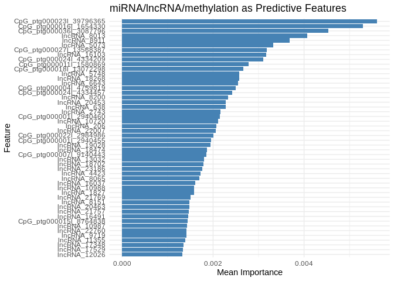
ggplot(performance_results_ATP_prod_GO_tp1, aes(x = as.factor(Feature), y = R2)) +
geom_point(color = "darkred", size = 3) +
geom_hline(yintercept = mean(performance_results_ATP_prod_GO_tp1$R2, na.rm = TRUE), linetype = "dashed", color = "blue") +
theme_minimal() +
labs(title = "Model Performance Across Gene Expression",
x = "Gene Expression PC",
y = "R² (Variance Explained)") +
theme(axis.text.x = element_text(angle = 45, hjust = 1)) + # Rotate labels
ylim(0,1)## Warning: Removed 21 rows containing missing values or values outside the scale range
## (`geom_point()`).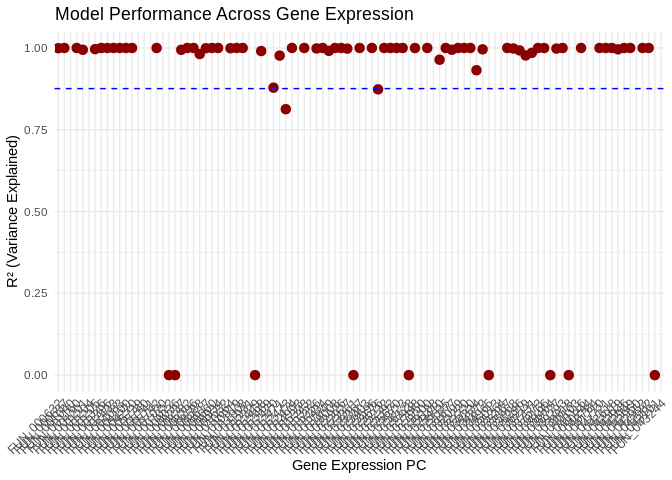
View predicted vs actual gene expression values to evaluate model.
# Choose a gene expression PC to visualize (e.g., the most predictable one)
best_feature_ATP_prod_GO_tp1 <- performance_results_ATP_prod_GO_tp1$Feature[which.max(performance_results_ATP_prod_GO_tp1$R2)]
# Extract actual and predicted values for that PC
actual_values_ATP_prod_GO_tp1 <- vsd_energetic_state_GO_tp1[[best_feature_ATP_prod_GO_tp1]]
predicted_values_ATP_prod_GO_tp1 <- predict(models_ATP_prod_GO_tp1[[best_feature_ATP_prod_GO_tp1]], as.matrix(full_pred_counts_tp1), s = "lambda.min")
# Create data frame
prediction_df_ATP_prod_GO_tp1 <- data.frame(
Actual = actual_values_ATP_prod_GO_tp1,
Predicted = predicted_values_ATP_prod_GO_tp1
)
# Scatter plot with regression line
ggplot(prediction_df_ATP_prod_GO_tp1, aes(x = Actual, y = lambda.min)) +
geom_point(color = "blue", alpha = 0.7) +
geom_smooth(method = "lm", color = "red", se = FALSE) +
theme_minimal() +
labs(title = paste("Predicted vs. Actual for", best_feature_ATP_prod_GO_tp1),
x = "Actual Gene Expression PC",
y = "Predicted Gene Expression PC") +
annotate("text", x = min(actual_values_ATP_prod_GO_tp1), y = max(predicted_values_ATP_prod_GO_tp1),
label = paste("R² =", round(max(performance_results_ATP_prod_GO_tp1$R2, na.rm=TRUE), 3)),
hjust = 0, color = "black", size = 5)## `geom_smooth()` using formula = 'y ~ x'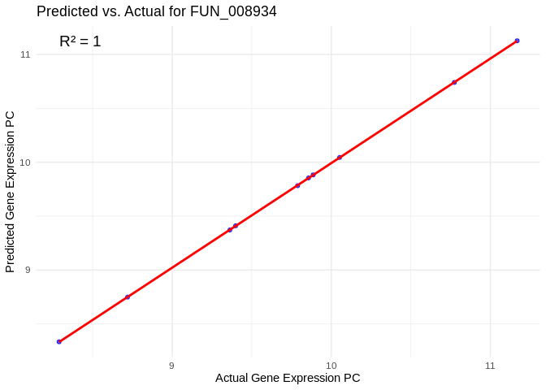
## `geom_smooth()` using formula = 'y ~ x'We can also look at which miRNA(s) contributed most to predicting gene of interest
# Select all with R^2 values above line in plot
all_features_ATP_prod_GO_tp1 <- performance_results_ATP_prod_GO_tp1 %>% filter(R2 > 0.75) %>% pull(Feature)
get_feature_importance_for_feature <- function(model) {
coefs <- as.matrix(coef(model, s = "lambda.min"))[-1, , drop = FALSE] # Remove intercept
coefs_df <- data.frame(Feature = rownames(coefs), Importance = abs(as.numeric(coefs)))
return(coefs_df %>% arrange(desc(Importance))) # Sort by importance
}
for (feature in all_features_ATP_prod_GO_tp1) {
# Extract feature importance for the most predictable PC
best_feature_model <- models_ATP_prod_GO_tp1[[feature]]
best_feature_importance <- get_feature_importance_for_feature(best_feature_model)
# Plot top most important miRNA/lncRNA/methylation for predicting this PC
plot <- ggplot(best_feature_importance %>% head(20), aes(x = reorder(Feature, Importance), y = Importance)) +
geom_bar(stat = "identity", fill = "steelblue") +
coord_flip() +
theme_minimal() +
labs(title = paste("Top miRNA/lncRNA/methylation Predictors for", feature),
x = "Feature",
y = "Importance Score")
print(plot)
}# Compute correlation between actual and predicted gene expression
predicted_matrix <- sapply(models_ATP_prod_GO_tp1, function(m) predict(m, as.matrix(full_pred_counts_tp1), s = "lambda.min"))
# Ensure matrices are the same size
predicted_matrix <- predicted_matrix[, colnames(vsd_energetic_state_GO_tp1), drop = FALSE] # Align columns
# remove 0 variance columns
predicted_matrix <- predicted_matrix[, apply(predicted_matrix, 2, function(col) sd(col, na.rm = TRUE) > 0)]
# Compute correlation matrix, handling missing values
cor_matrix <- cor(predicted_matrix, as.matrix(vsd_energetic_state_GO_tp1), use = "complete.obs")
# Replace NA or Inf values with zero
cor_matrix[is.na(cor_matrix) | is.infinite(cor_matrix)] <- 0
# Plot heatmap
pheatmap(cor_matrix, color = colorRampPalette(c("blue", "white", "red"))(100),
main = "Correlation Between Actual and Predicted Gene Expression",
cluster_rows = FALSE,
cluster_cols = FALSE,
fontsize = 10)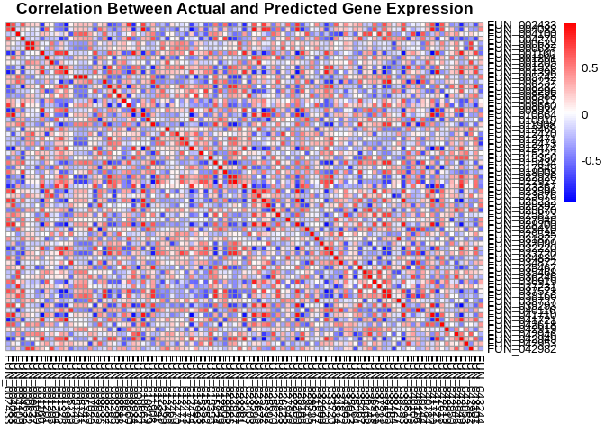
5.2 TP2
5.2.1 The model
Train elastic models to predict gene expression from miRNA/lncRNA/methylation
# Train models predicting gene expression from miRNA/lncRNA/methylation
models_ATP_prod_GO_tp2 <- train_models(vsd_energetic_state_GO_tp2, full_pred_counts_tp2)Extract feature importance.
feature_importance_ATP_prod_GO_tp2 <- get_feature_importance(models_ATP_prod_GO_tp2)
head(feature_importance_ATP_prod_GO_tp2, 20) # Top predictive miRNA## # A tibble: 20 × 2
## Feature MeanImportance
## <chr> <dbl>
## 1 Cluster_9786 0.00251
## 2 lncRNA_8911 0.00243
## 3 CpG_ptg000024l_4334914 0.00233
## 4 lncRNA_13099 0.00223
## 5 lncRNA_3523 0.00175
## 6 CpG_ptg000027l_13526778 0.00171
## 7 lncRNA_10399 0.00166
## 8 lncRNA_21300 0.00165
## 9 lncRNA_11688 0.00165
## 10 lncRNA_20244 0.00165
## 11 lncRNA_13942 0.00162
## 12 lncRNA_11426 0.00161
## 13 lncRNA_1373 0.00151
## 14 lncRNA_7949 0.00146
## 15 lncRNA_11150 0.00141
## 16 lncRNA_13677 0.00140
## 17 lncRNA_21189 0.00139
## 18 lncRNA_8054 0.00138
## 19 lncRNA_21947 0.00135
## 20 lncRNA_23254 0.00134Evaluate performance.
performance_results_ATP_prod_GO_tp2 <- evaluate_model_performance(models_ATP_prod_GO_tp2, vsd_energetic_state_GO_tp2, full_pred_counts_tp2)
summary(performance_results_ATP_prod_GO_tp2$R2)## Min. 1st Qu. Median Mean 3rd Qu. Max. NA's
## 0.0000 0.9593 0.9988 0.8912 1.0000 1.0000 255.2.2 Results
Plot results.
# Select top predictive features
top_features_ATP_prod_GO_tp2 <- feature_importance_ATP_prod_GO_tp2 %>% top_n(50, MeanImportance)
# Plot
ggplot(top_features_ATP_prod_GO_tp2, aes(x = reorder(Feature, MeanImportance), y = MeanImportance)) +
geom_bar(stat = "identity", fill = "steelblue") +
coord_flip() + # Flip for readability
theme_minimal() +
labs(title = "miRNA/lncRNA/methylation as Predictive Features",
x = "Feature",
y = "Mean Importance")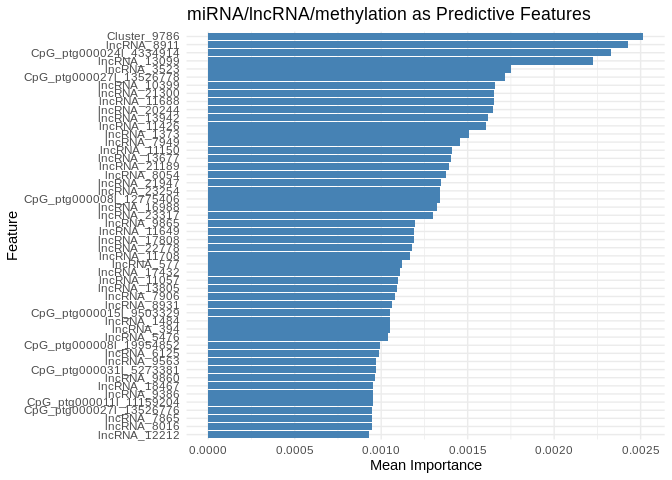
ggplot(performance_results_ATP_prod_GO_tp2, aes(x = as.factor(Feature), y = R2)) +
geom_point(color = "darkred", size = 3) +
geom_hline(yintercept = mean(performance_results_ATP_prod_GO_tp2$R2, na.rm = TRUE), linetype = "dashed", color = "blue") +
theme_minimal() +
labs(title = "Model Performance Across Gene Expression",
x = "Gene Expression PC",
y = "R² (Variance Explained)") +
theme(axis.text.x = element_text(angle = 45, hjust = 1)) + # Rotate labels
ylim(0,1)## Warning: Removed 25 rows containing missing values or values outside the scale range
## (`geom_point()`).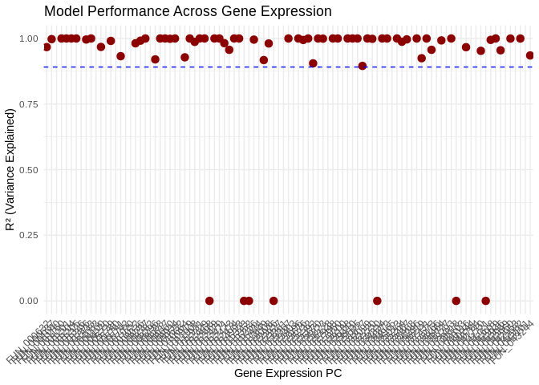
View predicted vs actual gene expression values to evaluate model.
# Choose a gene expression PC to visualize (e.g., the most predictable one)
best_feature_ATP_prod_GO_tp2 <- performance_results_ATP_prod_GO_tp2$Feature[which.max(performance_results_ATP_prod_GO_tp2$R2)]
# Extract actual and predicted values for that PC
actual_values_ATP_prod_GO_tp2 <- vsd_energetic_state_GO_tp2[[best_feature_ATP_prod_GO_tp2]]
predicted_values_ATP_prod_GO_tp2 <- predict(models_ATP_prod_GO_tp2[[best_feature_ATP_prod_GO_tp2]], as.matrix(full_pred_counts_tp2), s = "lambda.min")
# Create data frame
prediction_df_ATP_prod_GO_tp2 <- data.frame(
Actual = actual_values_ATP_prod_GO_tp2,
Predicted = predicted_values_ATP_prod_GO_tp2
)
# Scatter plot with regression line
ggplot(prediction_df_ATP_prod_GO_tp2, aes(x = Actual, y = lambda.min)) +
geom_point(color = "blue", alpha = 0.7) +
geom_smooth(method = "lm", color = "red", se = FALSE) +
theme_minimal() +
labs(title = paste("Predicted vs. Actual for", best_feature_ATP_prod_GO_tp2),
x = "Actual Gene Expression PC",
y = "Predicted Gene Expression PC") +
annotate("text", x = min(actual_values_ATP_prod_GO_tp2), y = max(predicted_values_ATP_prod_GO_tp2),
label = paste("R² =", round(max(performance_results_ATP_prod_GO_tp2$R2, na.rm=TRUE), 3)),
hjust = 0, color = "black", size = 5)## `geom_smooth()` using formula = 'y ~ x'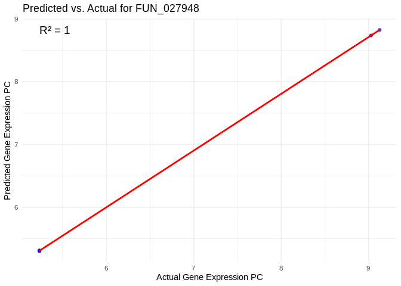
## `geom_smooth()` using formula = 'y ~ x'We can also look at which miRNA(s) contributed most to predicting gene of interest
# Select all with R^2 values above line in plot
all_features_ATP_prod_GO_tp2 <- performance_results_ATP_prod_GO_tp2 %>% filter(R2 > 0.75) %>% pull(Feature)
get_feature_importance_for_feature <- function(model) {
coefs <- as.matrix(coef(model, s = "lambda.min"))[-1, , drop = FALSE] # Remove intercept
coefs_df <- data.frame(Feature = rownames(coefs), Importance = abs(as.numeric(coefs)))
return(coefs_df %>% arrange(desc(Importance))) # Sort by importance
}
for (feature in all_features_ATP_prod_GO_tp2) {
# Extract feature importance for the most predictable PC
best_feature_model <- models_ATP_prod_GO_tp2[[feature]]
best_feature_importance <- get_feature_importance_for_feature(best_feature_model)
# Plot top most important miRNA/lncRNA/methylation for predicting this PC
plot <- ggplot(best_feature_importance %>% head(20), aes(x = reorder(Feature, Importance), y = Importance)) +
geom_bar(stat = "identity", fill = "steelblue") +
coord_flip() +
theme_minimal() +
labs(title = paste("Top miRNA/lncRNA/methylation Predictors for", feature),
x = "Feature",
y = "Importance Score")
print(plot)
}# Compute correlation between actual and predicted gene expression
predicted_matrix <- sapply(models_ATP_prod_GO_tp2, function(m) predict(m, as.matrix(full_pred_counts_tp2), s = "lambda.min"))
# Ensure matrices are the same size
predicted_matrix <- predicted_matrix[, colnames(vsd_energetic_state_GO_tp2), drop = FALSE] # Align columns
# remove 0 variance columns
predicted_matrix <- predicted_matrix[, apply(predicted_matrix, 2, function(col) sd(col, na.rm = TRUE) > 0)]
# Compute correlation matrix, handling missing values
cor_matrix <- cor(predicted_matrix, as.matrix(vsd_energetic_state_GO_tp2), use = "complete.obs")
# Replace NA or Inf values with zero
cor_matrix[is.na(cor_matrix) | is.infinite(cor_matrix)] <- 0
# Plot heatmap
pheatmap(cor_matrix, color = colorRampPalette(c("blue", "white", "red"))(100),
main = "Correlation Between Actual and Predicted Gene Expression",
cluster_rows = FALSE,
cluster_cols = FALSE,
fontsize = 10)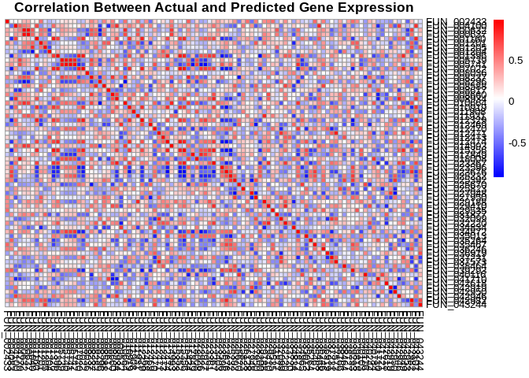
5.3 TP3
5.3.1 The model
Train elastic models to predict gene expression from miRNA/lncRNA/methylation
# Train models predicting gene expression from miRNA/lncRNA/methylation
models_ATP_prod_GO_tp3 <- train_models(vsd_energetic_state_GO_tp3, full_pred_counts_tp3)Extract feature importance.
feature_importance_ATP_prod_GO_tp3 <- get_feature_importance(models_ATP_prod_GO_tp3)
head(feature_importance_ATP_prod_GO_tp3, 20) # Top predictive miRNA## # A tibble: 20 × 2
## Feature MeanImportance
## <chr> <dbl>
## 1 lncRNA_12200 0.00817
## 2 CpG_ptg000022l_2985007 0.00816
## 3 lncRNA_1034 0.00544
## 4 lncRNA_6545 0.00463
## 5 lncRNA_11321 0.00451
## 6 CpG_ptg000001l_16528327 0.00440
## 7 lncRNA_6491 0.00418
## 8 lncRNA_1499 0.00326
## 9 CpG_ptg000024l_4334221 0.00312
## 10 lncRNA_22323 0.00291
## 11 lncRNA_22846 0.00287
## 12 lncRNA_11110 0.00276
## 13 lncRNA_3700 0.00258
## 14 lncRNA_13729 0.00238
## 15 CpG_ptg000027l_13568387 0.00223
## 16 CpG_ptg000025l_13842126 0.00221
## 17 CpG_ptg000017l_11261562 0.00217
## 18 lncRNA_1449 0.00214
## 19 lncRNA_13040 0.00213
## 20 CpG_ptg000036l_4603566 0.00211Evaluate performance.
performance_results_ATP_prod_GO_tp3 <- evaluate_model_performance(models_ATP_prod_GO_tp3, vsd_energetic_state_GO_tp3, full_pred_counts_tp3)
summary(performance_results_ATP_prod_GO_tp3$R2)## Min. 1st Qu. Median Mean 3rd Qu. Max. NA's
## 0.0000 0.9946 1.0000 0.9067 1.0000 1.0000 205.3.2 Results
Plot results.
# Select top predictive features
top_features_ATP_prod_GO_tp3 <- feature_importance_ATP_prod_GO_tp3 %>% top_n(50, MeanImportance)
# Plot
ggplot(top_features_ATP_prod_GO_tp3, aes(x = reorder(Feature, MeanImportance), y = MeanImportance)) +
geom_bar(stat = "identity", fill = "steelblue") +
coord_flip() + # Flip for readability
theme_minimal() +
labs(title = "miRNA/lncRNA/methylation as Predictive Features",
x = "Feature",
y = "Mean Importance")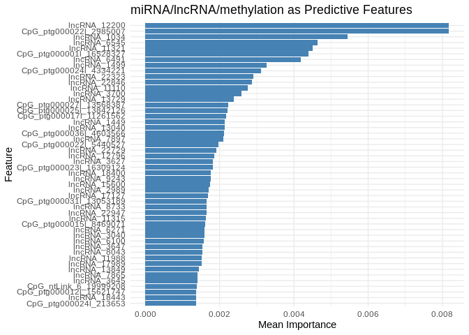
ggplot(performance_results_ATP_prod_GO_tp3, aes(x = as.factor(Feature), y = R2)) +
geom_point(color = "darkred", size = 3) +
geom_hline(yintercept = mean(performance_results_ATP_prod_GO_tp3$R2, na.rm = TRUE), linetype = "dashed", color = "blue") +
theme_minimal() +
labs(title = "Model Performance Across Gene Expression",
x = "Gene Expression PC",
y = "R² (Variance Explained)") +
theme(axis.text.x = element_text(angle = 45, hjust = 1)) + # Rotate labels
ylim(0,1)## Warning: Removed 20 rows containing missing values or values outside the scale range
## (`geom_point()`).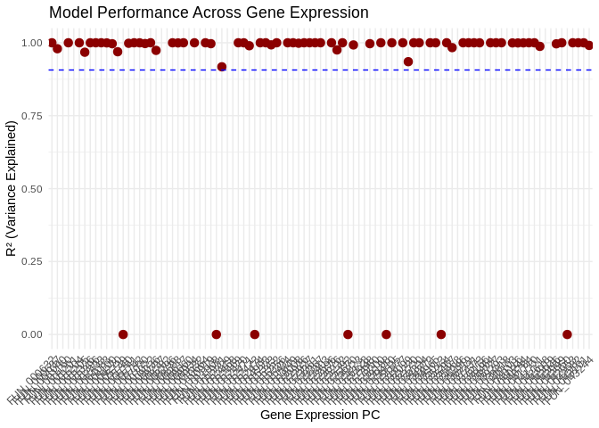
View predicted vs actual gene expression values to evaluate model.
# Choose a gene expression PC to visualize (e.g., the most predictable one)
best_feature_ATP_prod_GO_tp3 <- performance_results_ATP_prod_GO_tp3$Feature[which.max(performance_results_ATP_prod_GO_tp3$R2)]
# Extract actual and predicted values for that PC
actual_values_ATP_prod_GO_tp3 <- vsd_energetic_state_GO_tp3[[best_feature_ATP_prod_GO_tp3]]
predicted_values_ATP_prod_GO_tp3 <- predict(models_ATP_prod_GO_tp3[[best_feature_ATP_prod_GO_tp3]], as.matrix(full_pred_counts_tp3), s = "lambda.min")
# Create data frame
prediction_df_ATP_prod_GO_tp3 <- data.frame(
Actual = actual_values_ATP_prod_GO_tp3,
Predicted = predicted_values_ATP_prod_GO_tp3
)
# Scatter plot with regression line
ggplot(prediction_df_ATP_prod_GO_tp3, aes(x = Actual, y = lambda.min)) +
geom_point(color = "blue", alpha = 0.7) +
geom_smooth(method = "lm", color = "red", se = FALSE) +
theme_minimal() +
labs(title = paste("Predicted vs. Actual for", best_feature_ATP_prod_GO_tp3),
x = "Actual Gene Expression PC",
y = "Predicted Gene Expression PC") +
annotate("text", x = min(actual_values_ATP_prod_GO_tp3), y = max(predicted_values_ATP_prod_GO_tp3),
label = paste("R² =", round(max(performance_results_ATP_prod_GO_tp3$R2, na.rm=TRUE), 3)),
hjust = 0, color = "black", size = 5)## `geom_smooth()` using formula = 'y ~ x'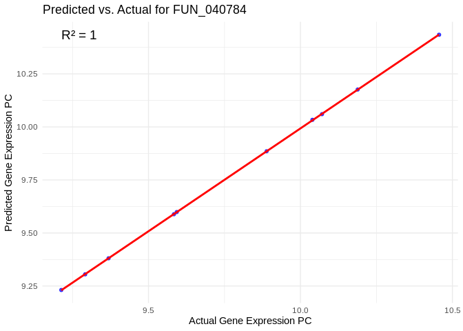
## `geom_smooth()` using formula = 'y ~ x'We can also look at which miRNA(s) contributed most to predicting gene of interest
# Select all with R^2 values above line in plot
all_features_ATP_prod_GO_tp3 <- performance_results_ATP_prod_GO_tp3 %>% filter(R2 > 0.75) %>% pull(Feature)
get_feature_importance_for_feature <- function(model) {
coefs <- as.matrix(coef(model, s = "lambda.min"))[-1, , drop = FALSE] # Remove intercept
coefs_df <- data.frame(Feature = rownames(coefs), Importance = abs(as.numeric(coefs)))
return(coefs_df %>% arrange(desc(Importance))) # Sort by importance
}
for (feature in all_features_ATP_prod_GO_tp3) {
# Extract feature importance for the most predictable PC
best_feature_model <- models_ATP_prod_GO_tp3[[feature]]
best_feature_importance <- get_feature_importance_for_feature(best_feature_model)
# Plot top most important miRNA/lncRNA/methylation for predicting this PC
plot <- ggplot(best_feature_importance %>% head(20), aes(x = reorder(Feature, Importance), y = Importance)) +
geom_bar(stat = "identity", fill = "steelblue") +
coord_flip() +
theme_minimal() +
labs(title = paste("Top miRNA/lncRNA/methylation Predictors for", feature),
x = "Feature",
y = "Importance Score")
print(plot)
}# Compute correlation between actual and predicted gene expression
predicted_matrix <- sapply(models_ATP_prod_GO_tp3, function(m) predict(m, as.matrix(full_pred_counts_tp3), s = "lambda.min"))
# Ensure matrices are the same size
predicted_matrix <- predicted_matrix[, colnames(vsd_energetic_state_GO_tp3), drop = FALSE] # Align columns
# remove 0 variance columns
predicted_matrix <- predicted_matrix[, apply(predicted_matrix, 2, function(col) sd(col, na.rm = TRUE) > 0)]
# Compute correlation matrix, handling missing values
cor_matrix <- cor(predicted_matrix, as.matrix(vsd_energetic_state_GO_tp3), use = "complete.obs")
# Replace NA or Inf values with zero
cor_matrix[is.na(cor_matrix) | is.infinite(cor_matrix)] <- 0
# Plot heatmap
pheatmap(cor_matrix, color = colorRampPalette(c("blue", "white", "red"))(100),
main = "Correlation Between Actual and Predicted Gene Expression",
cluster_rows = FALSE,
cluster_cols = FALSE,
fontsize = 10)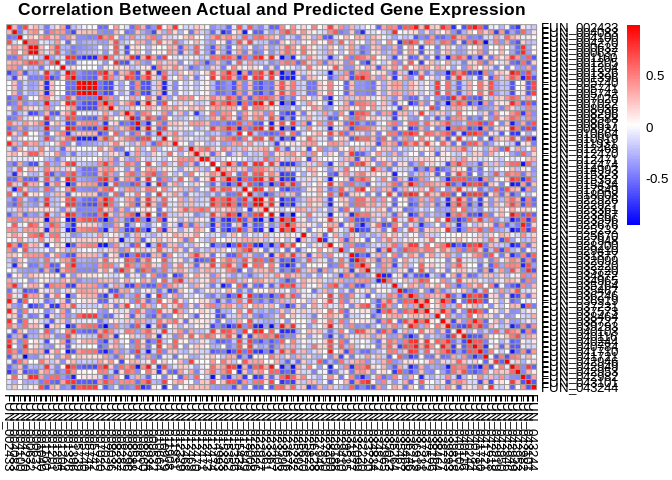
5.4 TP4
5.4.1 The model
Train elastic models to predict gene expression from miRNA/lncRNA/methylation
# Train models predicting gene expression from miRNA/lncRNA/methylation
models_ATP_prod_GO_tp4 <- train_models(vsd_energetic_state_GO_tp4, full_pred_counts_tp4)Extract feature importance.
feature_importance_ATP_prod_GO_tp4 <- get_feature_importance(models_ATP_prod_GO_tp4)
head(feature_importance_ATP_prod_GO_tp4, 20) # Top predictive miRNA## # A tibble: 20 × 2
## Feature MeanImportance
## <chr> <dbl>
## 1 lncRNA_17688 0.00417
## 2 lncRNA_9386 0.00405
## 3 lncRNA_19774 0.00384
## 4 lncRNA_1162 0.00365
## 5 lncRNA_5418 0.00349
## 6 lncRNA_8652 0.00349
## 7 lncRNA_22886 0.00343
## 8 lncRNA_053 0.00332
## 9 lncRNA_8067 0.00327
## 10 lncRNA_23922 0.00312
## 11 lncRNA_2103 0.00305
## 12 lncRNA_1662 0.00304
## 13 CpG_ptg000030l_2148131 0.00290
## 14 CpG_ptg000015l_9303469 0.00268
## 15 lncRNA_8841 0.00260
## 16 lncRNA_1964 0.00259
## 17 lncRNA_7373 0.00255
## 18 lncRNA_3700 0.00243
## 19 lncRNA_9252 0.00240
## 20 lncRNA_12533 0.00229Evaluate performance.
performance_results_ATP_prod_GO_tp4 <- evaluate_model_performance(models_ATP_prod_GO_tp4, vsd_energetic_state_GO_tp4, full_pred_counts_tp4)
summary(performance_results_ATP_prod_GO_tp4$R2)## Min. 1st Qu. Median Mean 3rd Qu. Max. NA's
## 0.0000 0.9817 1.0000 0.8802 1.0000 1.0000 185.4.2 Results
Plot results.
# Select top predictive features
top_features_ATP_prod_GO_tp4 <- feature_importance_ATP_prod_GO_tp4 %>% top_n(50, MeanImportance)
# Plot
ggplot(top_features_ATP_prod_GO_tp4, aes(x = reorder(Feature, MeanImportance), y = MeanImportance)) +
geom_bar(stat = "identity", fill = "steelblue") +
coord_flip() + # Flip for readability
theme_minimal() +
labs(title = "miRNA/lncRNA/methylation as Predictive Features",
x = "Feature",
y = "Mean Importance")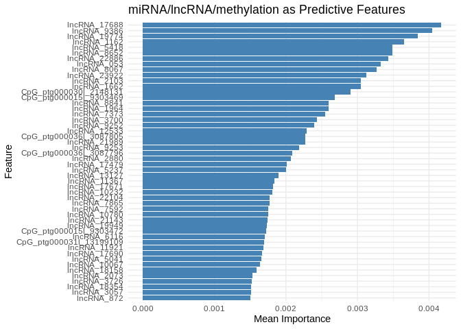
ggplot(performance_results_ATP_prod_GO_tp4, aes(x = as.factor(Feature), y = R2)) +
geom_point(color = "darkred", size = 3) +
geom_hline(yintercept = mean(performance_results_ATP_prod_GO_tp4$R2, na.rm = TRUE), linetype = "dashed", color = "blue") +
theme_minimal() +
labs(title = "Model Performance Across Gene Expression",
x = "Gene Expression PC",
y = "R² (Variance Explained)") +
theme(axis.text.x = element_text(angle = 45, hjust = 1)) + # Rotate labels
ylim(0,1)## Warning: Removed 18 rows containing missing values or values outside the scale range
## (`geom_point()`).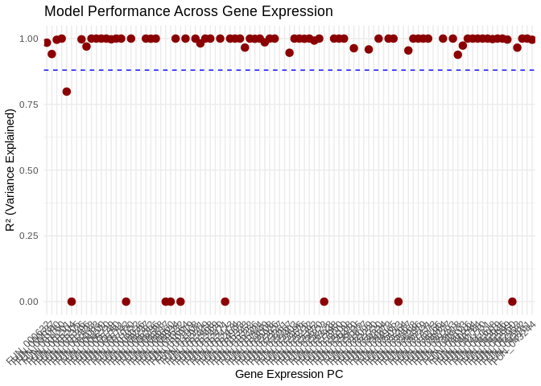
View predicted vs actual gene expression values to evaluate model.
# Choose a gene expression PC to visualize (e.g., the most predictable one)
best_feature_ATP_prod_GO_tp4 <- performance_results_ATP_prod_GO_tp4$Feature[which.max(performance_results_ATP_prod_GO_tp4$R2)]
# Extract actual and predicted values for that PC
actual_values_ATP_prod_GO_tp4 <- vsd_energetic_state_GO_tp4[[best_feature_ATP_prod_GO_tp4]]
predicted_values_ATP_prod_GO_tp4 <- predict(models_ATP_prod_GO_tp4[[best_feature_ATP_prod_GO_tp4]], as.matrix(full_pred_counts_tp4), s = "lambda.min")
# Create data frame
prediction_df_ATP_prod_GO_tp4 <- data.frame(
Actual = actual_values_ATP_prod_GO_tp4,
Predicted = predicted_values_ATP_prod_GO_tp4
)
# Scatter plot with regression line
ggplot(prediction_df_ATP_prod_GO_tp4, aes(x = Actual, y = lambda.min)) +
geom_point(color = "blue", alpha = 0.7) +
geom_smooth(method = "lm", color = "red", se = FALSE) +
theme_minimal() +
labs(title = paste("Predicted vs. Actual for", best_feature_ATP_prod_GO_tp4),
x = "Actual Gene Expression PC",
y = "Predicted Gene Expression PC") +
annotate("text", x = min(actual_values_ATP_prod_GO_tp4), y = max(predicted_values_ATP_prod_GO_tp4),
label = paste("R² =", round(max(performance_results_ATP_prod_GO_tp4$R2, na.rm=TRUE), 3)),
hjust = 0, color = "black", size = 5)## `geom_smooth()` using formula = 'y ~ x'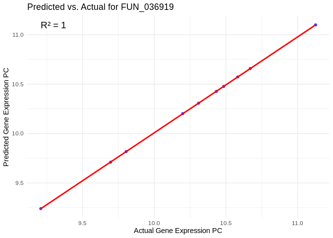
## `geom_smooth()` using formula = 'y ~ x'We can also look at which miRNA(s) contributed most to predicting gene of interest
# Select all with R^2 values above line in plot
all_features_ATP_prod_GO_tp4 <- performance_results_ATP_prod_GO_tp4 %>% filter(R2 > 0.75) %>% pull(Feature)
get_feature_importance_for_feature <- function(model) {
coefs <- as.matrix(coef(model, s = "lambda.min"))[-1, , drop = FALSE] # Remove intercept
coefs_df <- data.frame(Feature = rownames(coefs), Importance = abs(as.numeric(coefs)))
return(coefs_df %>% arrange(desc(Importance))) # Sort by importance
}
for (feature in all_features_ATP_prod_GO_tp4) {
# Extract feature importance for the most predictable PC
best_feature_model <- models_ATP_prod_GO_tp4[[feature]]
best_feature_importance <- get_feature_importance_for_feature(best_feature_model)
# Plot top most important miRNA/lncRNA/methylation for predicting this PC
plot <- ggplot(best_feature_importance %>% head(20), aes(x = reorder(Feature, Importance), y = Importance)) +
geom_bar(stat = "identity", fill = "steelblue") +
coord_flip() +
theme_minimal() +
labs(title = paste("Top miRNA/lncRNA/methylation Predictors for", feature),
x = "Feature",
y = "Importance Score")
print(plot)
}# Compute correlation between actual and predicted gene expression
predicted_matrix <- sapply(models_ATP_prod_GO_tp4, function(m) predict(m, as.matrix(full_pred_counts_tp4), s = "lambda.min"))
# Ensure matrices are the same size
predicted_matrix <- predicted_matrix[, colnames(vsd_energetic_state_GO_tp4), drop = FALSE] # Align columns
# remove 0 variance columns
predicted_matrix <- predicted_matrix[, apply(predicted_matrix, 2, function(col) sd(col, na.rm = TRUE) > 0)]
# Compute correlation matrix, handling missing values
cor_matrix <- cor(predicted_matrix, as.matrix(vsd_energetic_state_GO_tp4), use = "complete.obs")
# Replace NA or Inf values with zero
cor_matrix[is.na(cor_matrix) | is.infinite(cor_matrix)] <- 0
# Plot heatmap
pheatmap(cor_matrix, color = colorRampPalette(c("blue", "white", "red"))(100),
main = "Correlation Between Actual and Predicted Gene Expression",
cluster_rows = FALSE,
cluster_cols = FALSE,
fontsize = 10)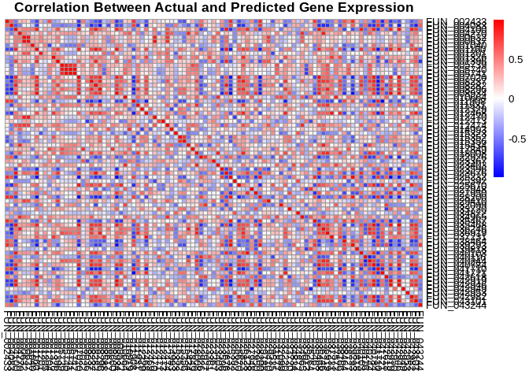
6 Compare accross timepoints
See, for each pair of timepoints, which features are present in both lists of top 50 most important features
intersect(top_features_ATP_prod_GO_tp1$Feature, top_features_ATP_prod_GO_tp4$Feature)## [1] "CpG_ptg000036l_3087796"intersect(top_features_ATP_prod_GO_tp1$Feature, top_features_ATP_prod_GO_tp2$Feature)## [1] "lncRNA_8911"intersect(top_features_ATP_prod_GO_tp1$Feature, top_features_ATP_prod_GO_tp3$Feature)## [1] "CpG_ptg000027l_13568387"intersect(top_features_ATP_prod_GO_tp2$Feature, top_features_ATP_prod_GO_tp3$Feature)## [1] "lncRNA_7865"intersect(top_features_ATP_prod_GO_tp2$Feature, top_features_ATP_prod_GO_tp4$Feature)## [1] "lncRNA_9386" "lncRNA_7865"intersect(top_features_ATP_prod_GO_tp3$Feature, top_features_ATP_prod_GO_tp4$Feature)## [1] "lncRNA_3700" "lncRNA_7865"Basically, there was little-to-no overlap in the most predictive features for each timepoint.
This is all making me pretty suspicious of how accurate the model is, I feel like it’s overfitting. So far I’ve just been training the model on all of our data. Instead, I need to try training on a subset of our data and then testing the model.
7 Split training and test
7.1 Define model training and testing function
train_models_split <- function(response_features, predictor_features, train_frac = 0.8, alpha = 0.5, nfolds = 10) {
# Set up storage
models <- list()
performance <- data.frame(Feature = colnames(response_features), R2 = NA)
# Select fraction of data
sample_idx <- sample(seq_len(nrow(predictor_features)), size = floor(train_frac * nrow(predictor_features)))
# Split predictor data
X_train <- predictor_features[sample_idx, ]
X_test <- predictor_features[-sample_idx, ]
for (feature in colnames(response_features)) {
# Split response data
y_train <- response_features[sample_idx, feature]
y_test <- response_features[-sample_idx, feature]
# Check if y_train is constant
if (length(unique(y_train)) == 1) {
warning(sprintf("Skipping feature '%s': y_train is constant", feature))
next
}
# Run model on training data
model <- cv.glmnet(as.matrix(X_train), y_train, alpha = alpha, nfolds = nfolds)
models[[feature]] <- model
# Now apply the trained model to test data
preds <- predict(model, newx = as.matrix(X_test), s = "lambda.min")
R2 <- cor(y_test, preds)^2
performance[performance$Feature == feature, "R2"] <- R2
}
return(list(models = models, performance = performance))
}7.2 Run function
# Run training/testing function
result_split <- train_models_split(vsd_energetic_state_GO_t, full_pred_counts)
# Results
trained_models_split <- result_split$models
model_performance_split <- result_split$performance
feature_importance_split <- get_feature_importance(trained_models_split)7.3 Results
Plot top predictive features for the test data
# Select top predictive features
top_features_split <- feature_importance_split %>% top_n(50, MeanImportance)
# Plot
ggplot(top_features_split, aes(x = reorder(Feature, MeanImportance), y = MeanImportance)) +
geom_bar(stat = "identity", fill = "steelblue") +
coord_flip() + # Flip for readability
theme_minimal() +
labs(title = "miRNA/lncRNA/methylation as Predictive Features",
x = "Feature",
y = "Mean Importance")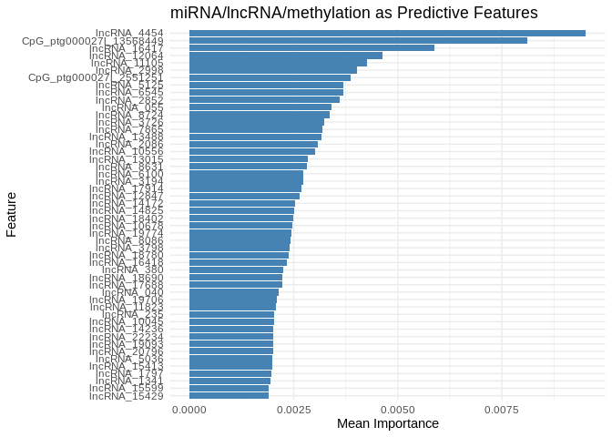
Plot performance (R^2) of the model in predicting the test data
ggplot(model_performance_split, aes(x = as.factor(Feature), y = R2)) +
geom_point(color = "darkred", size = 3) +
geom_hline(yintercept = mean(model_performance_split$R2, na.rm = TRUE), linetype = "dashed", color = "blue") +
theme_minimal() +
labs(title = "Model Performance Across Gene Expression",
x = "Gene Expression PC",
y = "R² (Variance Explained)") +
theme(axis.text.x = element_text(angle = 45, hjust = 1)) + # Rotate labels
ylim(0,1)## Warning: Removed 4 rows containing missing values or values outside the scale range
## (`geom_point()`).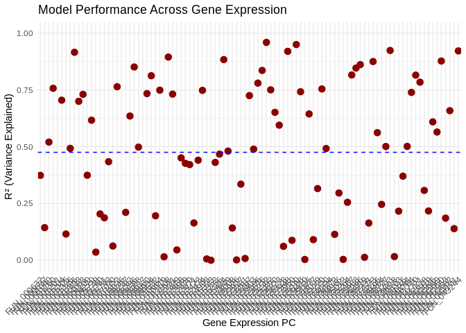
The values for explained variance are all over the place, which suggests the model may not be very generalizable accross all genes.
Let’s double check the R^2 distribution
ggplot(model_performance_split, aes(x = R2)) +
geom_histogram(bins = 20, fill = "skyblue", color = "black") +
labs(title = "Distribution of R² on Test Set", x = "R²", y = "Count") +
theme_minimal()## Warning: Removed 4 rows containing non-finite outside the scale range
## (`stat_bin()`).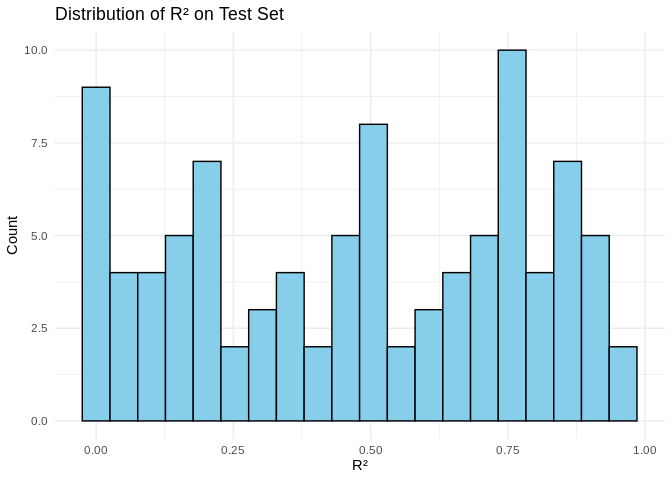
Again, model performance appears essentially random. This could be due to small sample size (though this seems less likely sigen N=40), invariant data, noise, or because expression of some genes is driven by features not included in our predictor set (e.g. transcription factors). The final option seems most likely to me.
There may, however, be a subset of genes whose expression is primarily driven by our epigenetic mechanisms. Bootstrapping should help us identify this subset, if it exists. I’ll run model training/testing many times and see which genes are consistently well-predicted.
8 Bootstrapping
n_replicates <- 25 # number of replicates
r2_threshold <- 0.5 # threshold for "good" prediction
TM_list <- list()
MP_list <- list()
FI_list <- list()
# Perform bootstrapping
for (i in 1:n_replicates) {
cat("Beginning replicate", i)
cat("\n")
result <- train_models_split(vsd_energetic_state_GO_t, full_pred_counts)
cat("Extracting results for replicate", i)
cat("\n")
trained_models <- result$models
model_performance <- result$performance
feature_importance <- get_feature_importance(trained_models)
TM_list[[i]] <- trained_models
TM_list[[i]]$Replicate <- i
MP_list[[i]] <- model_performance
MP_list[[i]]$Replicate <- i
FI_list[[i]] <- feature_importance
FI_list[[i]]$Replicate <- i
}## Beginning replicate 1
## Extracting results for replicate 1
## Beginning replicate 2
## Extracting results for replicate 2
## Beginning replicate 3
## Extracting results for replicate 3
## Beginning replicate 4
## Extracting results for replicate 4
## Beginning replicate 5
## Extracting results for replicate 5
## Beginning replicate 6
## Extracting results for replicate 6
## Beginning replicate 7
## Extracting results for replicate 7
## Beginning replicate 8
## Extracting results for replicate 8
## Beginning replicate 9
## Extracting results for replicate 9
## Beginning replicate 10
## Extracting results for replicate 10
## Beginning replicate 11
## Extracting results for replicate 11
## Beginning replicate 12
## Extracting results for replicate 12
## Beginning replicate 13
## Extracting results for replicate 13
## Beginning replicate 14
## Extracting results for replicate 14
## Beginning replicate 15
## Extracting results for replicate 15
## Beginning replicate 16
## Extracting results for replicate 16
## Beginning replicate 17
## Extracting results for replicate 17
## Beginning replicate 18
## Extracting results for replicate 18
## Beginning replicate 19
## Extracting results for replicate 19
## Beginning replicate 20
## Extracting results for replicate 20
## Beginning replicate 21
## Extracting results for replicate 21
## Beginning replicate 22
## Extracting results for replicate 22
## Beginning replicate 23
## Extracting results for replicate 23
## Beginning replicate 24
## Extracting results for replicate 24
## Beginning replicate 25
## Extracting results for replicate 25# Combine all results
all_TM <- do.call(rbind, TM_list)
all_MP <- do.call(rbind, MP_list)
all_FI <- do.call(rbind, FI_list)# Count how often each feature exceeds the R² threshold
MP_summary <- all_MP %>%
group_by(Feature) %>%
summarize(
Mean_R2 = mean(R2, na.rm = TRUE),
SD_R2 = sd(R2, na.rm = TRUE),
High_Perf_Count = sum(R2 >= r2_threshold),
.groups = 'drop'
) %>%
arrange(desc(High_Perf_Count))
# View top consistently high-performing features
print(MP_summary)## # A tibble: 99 × 4
## Feature Mean_R2 SD_R2 High_Perf_Count
## <chr> <dbl> <dbl> <int>
## 1 FUN_001160 0.840 0.0826 25
## 2 FUN_001396 0.845 0.0945 25
## 3 FUN_008934 0.920 0.0414 25
## 4 FUN_012474 0.808 0.0918 25
## 5 FUN_028200 0.912 0.0419 25
## 6 FUN_039293 0.846 0.0931 25
## 7 FUN_041721 0.880 0.0542 25
## 8 FUN_002433 0.748 0.120 24
## 9 FUN_011908 0.791 0.115 24
## 10 FUN_015434 0.844 0.131 24
## # ℹ 89 more rows# How many genes are consistently well-predicted?
nrow(MP_summary[MP_summary$Mean_R2 > 0.5,])## [1] 43Sort genes by average R^2 across all replicates, then plot R^2 for all replicates
# Merge mean R2 info into full replicate-level data
all_MP <- merge(all_MP, MP_summary[, c("Feature", "Mean_R2")], by = "Feature")
# Reorder Feature factor by Mean_R2
all_MP$Feature <- factor(all_MP$Feature,
levels = MP_summary$Feature[order(MP_summary$Mean_R2)])
# Plot with features sorted by mean R²
ggplot(all_MP, aes(x = Feature, y = R2)) +
geom_point(aes(color = as.factor(Replicate)), size = 1.5) +
geom_point(aes(y = Mean_R2), color = "black", shape = 18, size = 3) +
geom_hline(yintercept = mean(all_MP$R2, na.rm = TRUE),
linetype = "dashed", color = "blue") +
theme_minimal() +
labs(title = "Model Performance Across Gene Expression",
x = "Gene Expression Feature (Ordered by Mean R²)",
y = "R² (Variance Explained)",
color = "Replicate") +
theme(axis.text.x = element_text(angle = 45, hjust = 1)) +
ylim(0, 1)## Warning: Removed 80 rows containing missing values or values outside the scale range
## (`geom_point()`).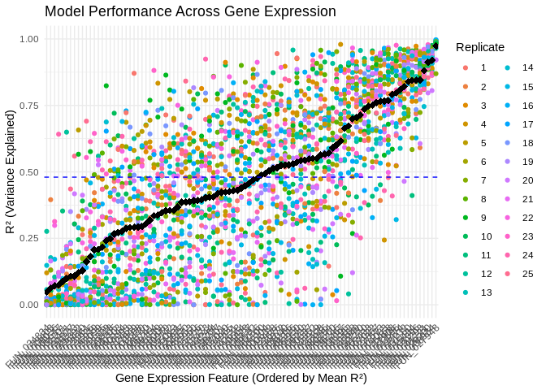
Average importance of all predictive features and plot those with highest average importance accross all replicates
# Average importance across replicates
mean_importance_df <- all_FI %>%
group_by(Feature) %>%
summarise(MeanImportance = mean(MeanImportance, na.rm = TRUE)) %>%
arrange(desc(MeanImportance))
# Select top 50 features
top_features <- mean_importance_df %>% top_n(50, MeanImportance)
# Plot
ggplot(top_features, aes(x = reorder(Feature, MeanImportance), y = MeanImportance)) +
geom_bar(stat = "identity", fill = "steelblue") +
coord_flip() + # Flip for readability
theme_minimal() +
labs(title = "Top Predictive Features by Mean Importance",
x = "Feature",
y = "Mean Importance")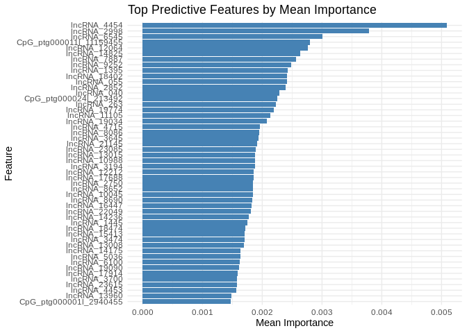
9 Boostrapping on predictable genes
Now I only want to model genes that are well-predicted over many replicates
Isolate well-predicted genes
well_predicted <- MP_summary[MP_summary$Mean_R2 > 0.5,]
vsd_high_perf_t <- vsd_energetic_state_GO_t[,colnames(vsd_energetic_state_GO_t) %in% well_predicted$Feature]
dim(vsd_high_perf_t)## [1] 40 43Of the original 99 genes annotated for energetic state GO terms, 35 are consistently well-predicted by our model.
Run bootstrapping on isolated genes
n_replicates <- 10 # number of replicates
r2_threshold <- 0.5 # threshold for "good" prediction
TM_list <- list()
MP_list <- list()
FI_list <- list()
# Perform bootstrapping
for (i in 1:n_replicates) {
cat("Beginning replicate", i)
cat("\n")
result <- train_models_split(vsd_high_perf_t, full_pred_counts)
cat("Extracting results for replicate", i)
cat("\n")
trained_models <- result$models
model_performance <- result$performance
feature_importance <- get_feature_importance(trained_models)
TM_list[[i]] <- list(Replicate = i, Models = trained_models)
MP_list[[i]] <- model_performance
MP_list[[i]]$Replicate <- i
FI_list[[i]] <- feature_importance
FI_list[[i]]$Replicate <- i
}## Beginning replicate 1
## Extracting results for replicate 1
## Beginning replicate 2
## Extracting results for replicate 2
## Beginning replicate 3
## Extracting results for replicate 3
## Beginning replicate 4
## Extracting results for replicate 4
## Beginning replicate 5
## Extracting results for replicate 5
## Beginning replicate 6
## Extracting results for replicate 6
## Beginning replicate 7
## Extracting results for replicate 7
## Beginning replicate 8
## Extracting results for replicate 8
## Beginning replicate 9
## Extracting results for replicate 9
## Beginning replicate 10
## Extracting results for replicate 10# Combine all results
all_TM_highperf <- do.call(rbind, TM_list)
all_MP_highperf <- do.call(rbind, MP_list)
all_FI_highperf <- do.call(rbind, FI_list)# Count how often each feature exceeds the R² threshold
MP_summary_highperf <- all_MP_highperf %>%
group_by(Feature) %>%
summarize(
Mean_R2 = mean(R2, na.rm = TRUE),
SD_R2 = sd(R2, na.rm = TRUE),
High_Perf_Count = sum(R2 >= r2_threshold),
.groups = 'drop'
) %>%
arrange(desc(High_Perf_Count))
# View top consistently high-performing features
print(MP_summary_highperf)## # A tibble: 43 × 4
## Feature Mean_R2 SD_R2 High_Perf_Count
## <chr> <dbl> <dbl> <int>
## 1 FUN_008934 0.897 0.0752 10
## 2 FUN_015434 0.826 0.0954 10
## 3 FUN_028200 0.910 0.0418 10
## 4 FUN_037573 0.844 0.0811 10
## 5 FUN_041721 0.849 0.0700 10
## 6 FUN_001160 0.750 0.186 9
## 7 FUN_001396 0.762 0.171 9
## 8 FUN_002433 0.674 0.132 9
## 9 FUN_007022 0.722 0.163 9
## 10 FUN_032220 0.721 0.240 9
## # ℹ 33 more rows# How many genes are consistently well-predicted?
nrow(MP_summary_highperf[MP_summary_highperf$Mean_R2 > 0.5,])## [1] 34When I train the model on only these 35 well-predicted genes, 28 of them are again well-predicted. That’s a much higher success rate! This suggests that epigenetic mechanisms may indeed be able to predict expression of these genes
Sort genes by average R^2 across all replicates, then plot R^2 for all replicates
# Merge mean R2 info into full replicate-level data
all_MP_highperf <- merge(all_MP_highperf, MP_summary_highperf[, c("Feature", "Mean_R2")], by = "Feature")
# Reorder Feature factor by Mean_R2
all_MP_highperf$Feature <- factor(all_MP_highperf$Feature,
levels = MP_summary_highperf$Feature[order(MP_summary_highperf$Mean_R2)])# Plot with features sorted by mean R²
ggplot(all_MP_highperf, aes(x = Feature, y = R2)) +
geom_point(aes(color = as.factor(Replicate)), size = 1.5) +
geom_point(aes(y = Mean_R2), color = "black", shape = 18, size = 3) +
geom_hline(yintercept = mean(all_MP_highperf$R2, na.rm = TRUE),
linetype = "dashed", color = "blue") +
theme_minimal() +
labs(title = "Model Performance Across Gene Expression",
x = "Gene Expression Feature (Ordered by Mean R²)",
y = "R² (Variance Explained)",
color = "Replicate") +
theme(axis.text.x = element_text(angle = 45, hjust = 1)) +
ylim(0, 1)## Warning: Removed 2 rows containing missing values or values outside the scale range
## (`geom_point()`).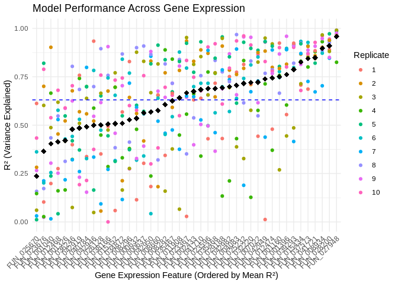
# Average importance across replicates
mean_importance_df_highperf <- all_FI_highperf %>%
group_by(Feature) %>%
summarise(MeanImportance = mean(MeanImportance, na.rm = TRUE)) %>%
arrange(desc(MeanImportance))
# Select top 50 features
top_features_highperf <- mean_importance_df_highperf %>% top_n(50, MeanImportance)
# Plot
ggplot(top_features_highperf, aes(x = reorder(Feature, MeanImportance), y = MeanImportance)) +
geom_bar(stat = "identity", fill = "steelblue") +
coord_flip() + # Flip for readability
theme_minimal() +
labs(title = "Top Predictive Features by Mean Importance",
x = "Feature",
y = "Mean Importance")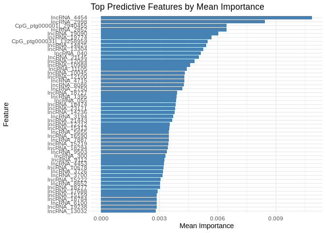
Look at most predictive epigenetic features for these well-predicted genes
# Define well-predicted features
all_features_highR2 <- all_MP_highperf %>%
filter(Mean_R2 > 0.5) %>%
pull(Feature) %>%
unique()
# Function to extract importance from a single model
get_feature_importance_for_feature <- function(model) {
coefs <- as.matrix(coef(model, s = "lambda.min"))[-1, , drop = FALSE] # remove intercept
data.frame(Predictor = rownames(coefs), Importance = abs(as.numeric(coefs)))
}
# Loop over features, aggregate importance across replicates, and plot
for (target_feature in all_features_highR2) {
# Extract and combine importance scores across all replicates
importance_all_reps <- lapply(TM_list, function(rep_entry) {
model <- rep_entry$Models[[target_feature]]
if (!is.null(model)) {
get_feature_importance_for_feature(model)
} else {
NULL
}
}) %>% bind_rows()
# If no importance data was found, skip
if (nrow(importance_all_reps) == 0) next
# Compute average importance across replicates
mean_importance <- importance_all_reps %>%
group_by(Predictor) %>%
summarise(MeanImportance = mean(Importance, na.rm = TRUE),
.groups = "drop") %>%
arrange(desc(MeanImportance)) %>%
slice_head(n = 20)
# Plot once per target feature
plot <- ggplot(mean_importance, aes(x = reorder(Predictor, MeanImportance), y = MeanImportance)) +
geom_bar(stat = "identity", fill = "steelblue") +
coord_flip() +
theme_minimal() +
labs(title = paste("Top Predictors for", target_feature),
x = "Predictor",
y = "Mean Importance (across replicates)")
print(plot)
}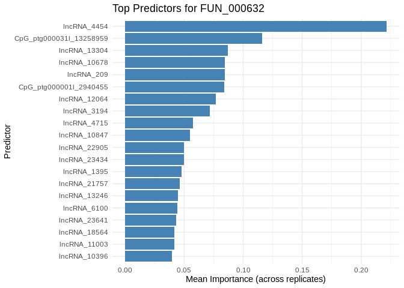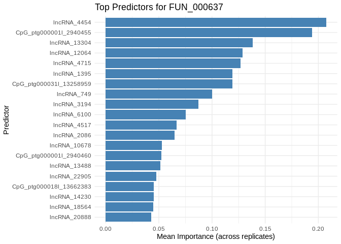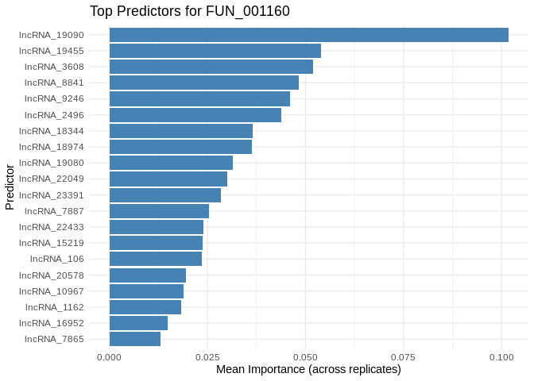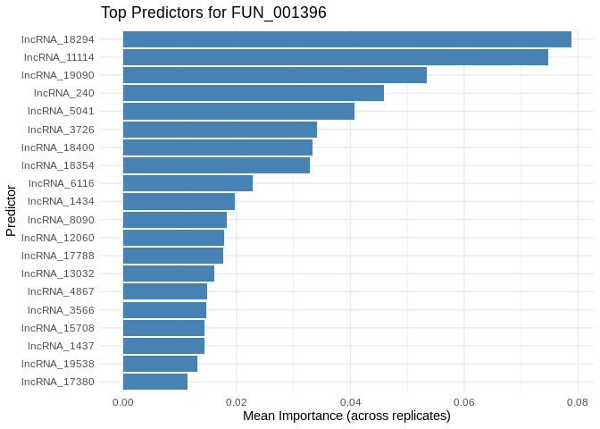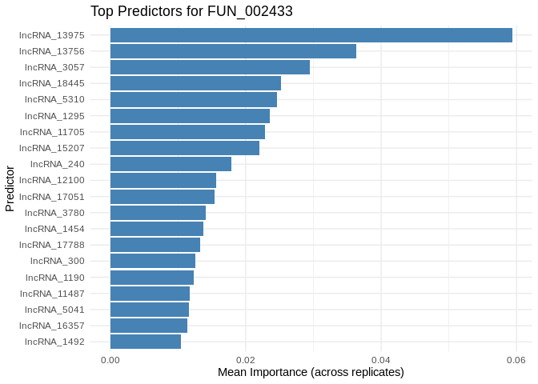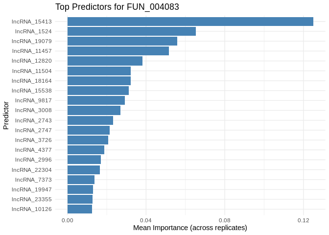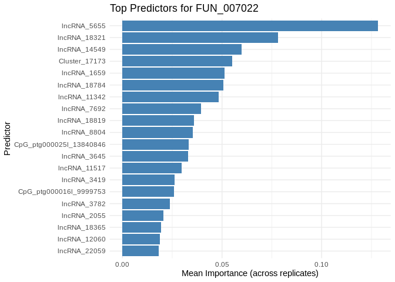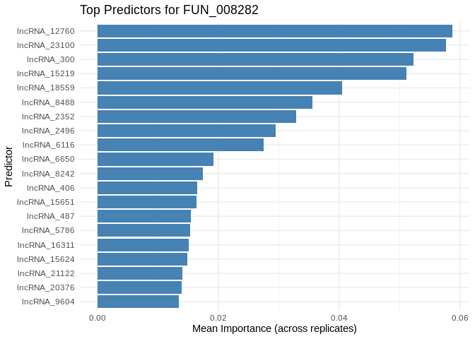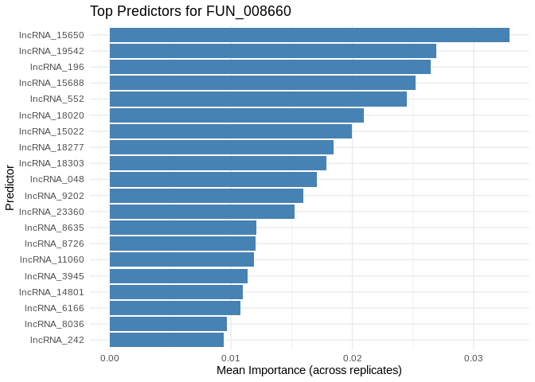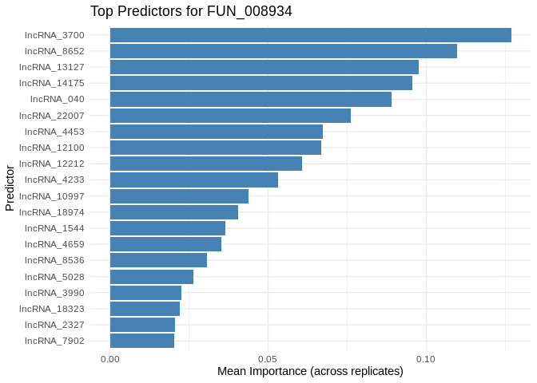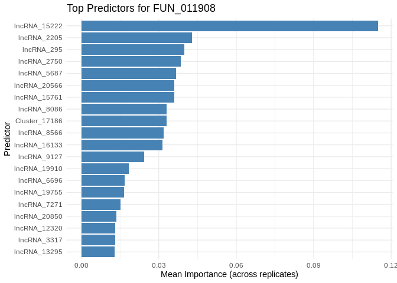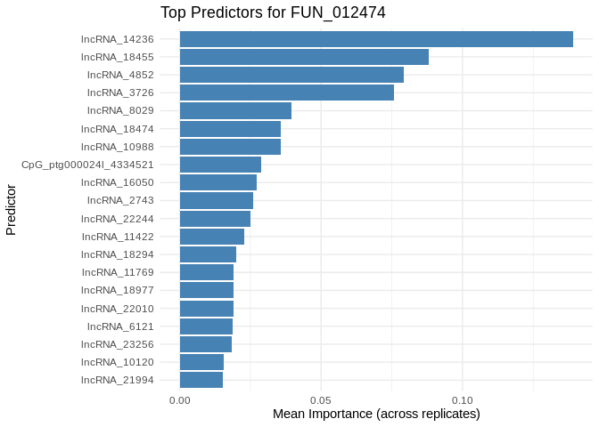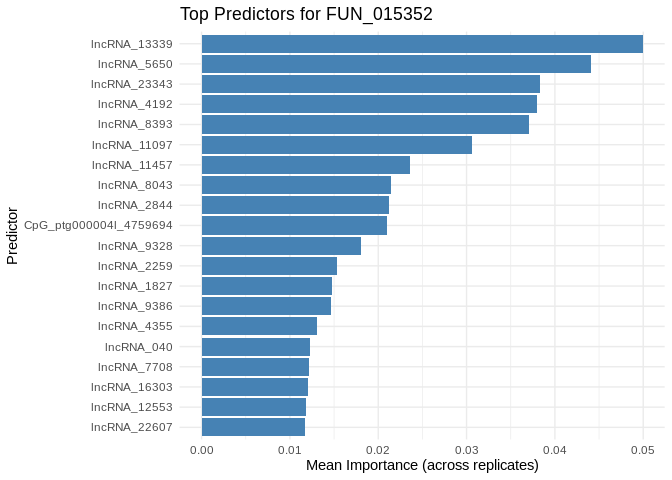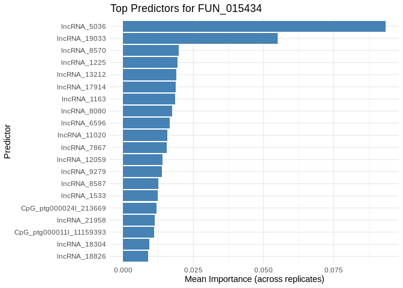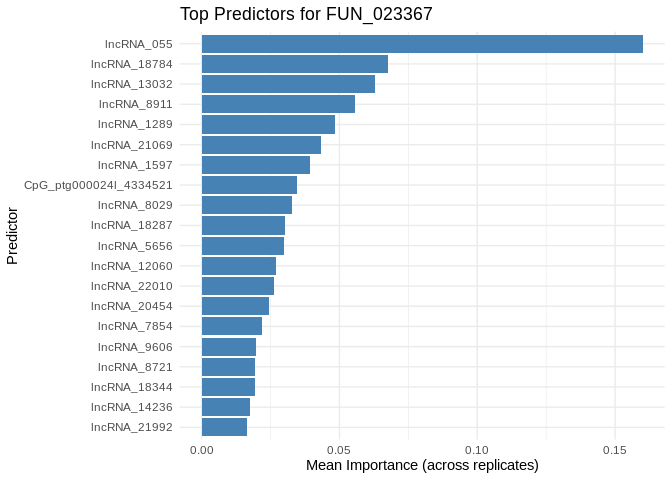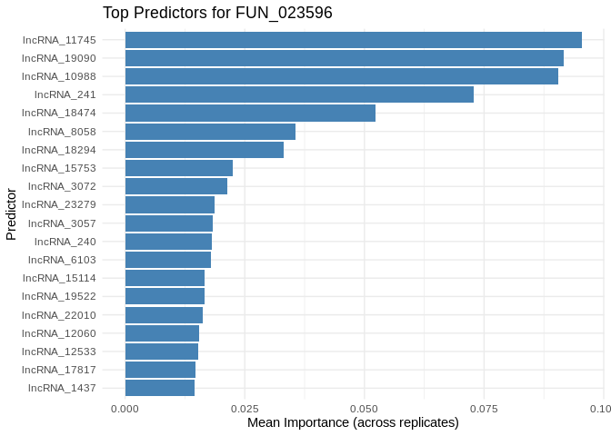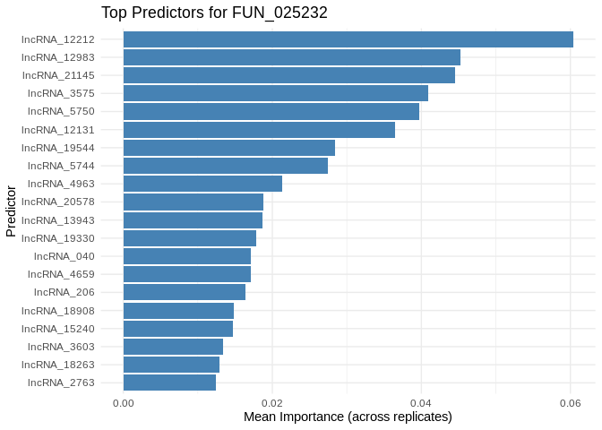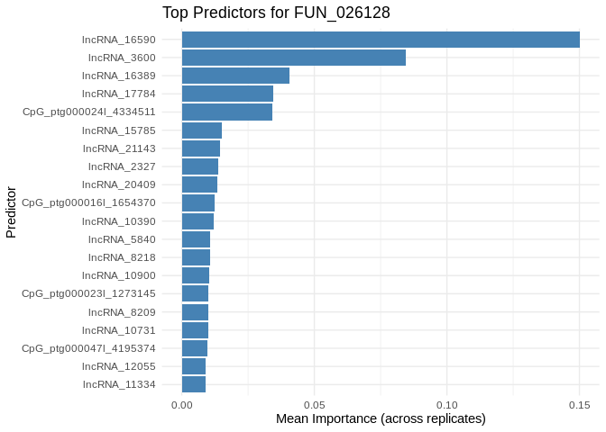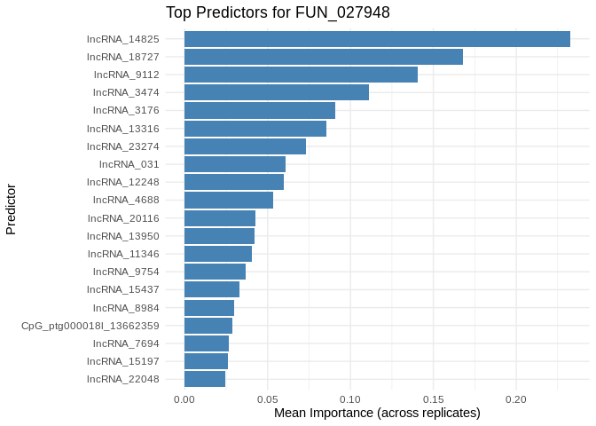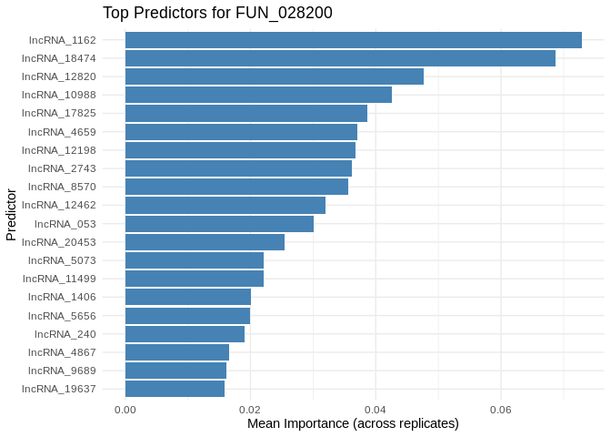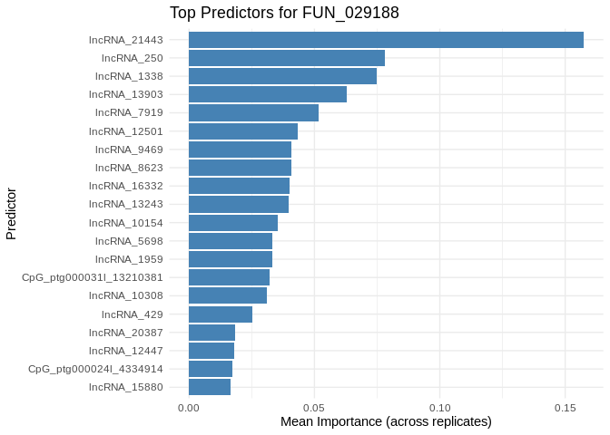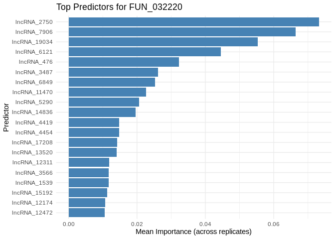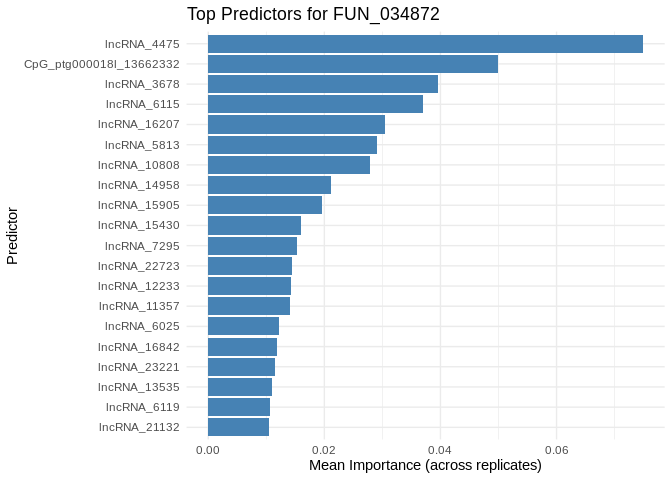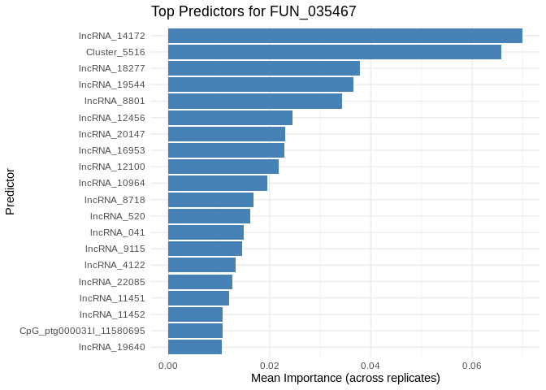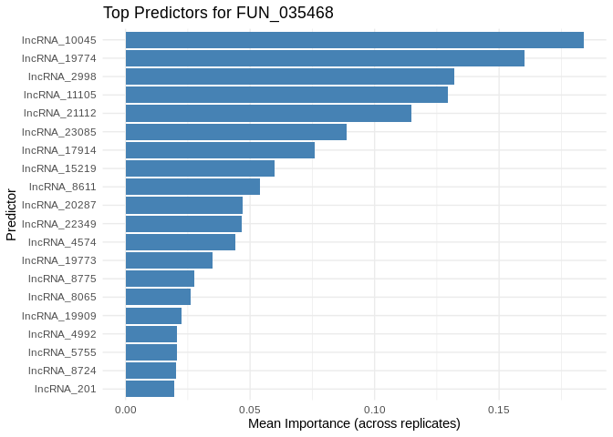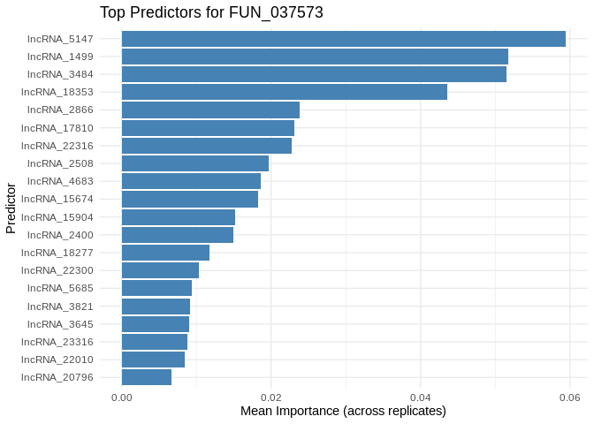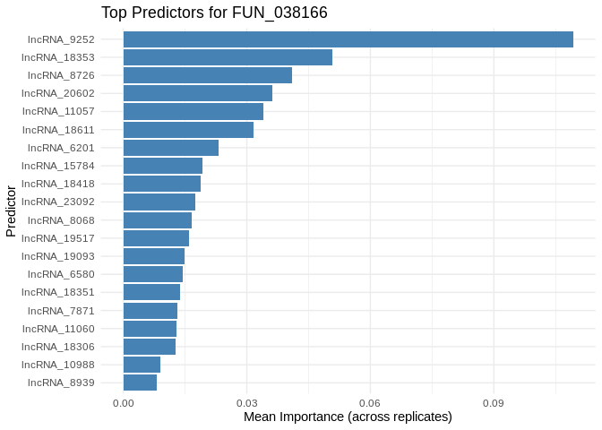
10 Functions of well-predicted genes
all_features_highR2_FA <- energetic_state_GO[energetic_state_GO$gene %in% all_features_highR2,]
print(all_features_highR2_FA)## gene module V1 V3
## 1 FUN_002433 ME2 ntLink_8:1537514-1543906 F1LU71
## 2 FUN_004083 ME2 ntLink_8:18989336-18999141 Q9ET22
## 5 FUN_000632 ME8 ntLink_6:5217131-5219121 O97125
## 6 FUN_000637 ME8 ntLink_6:5244470-5246789 O97125
## 8 FUN_001160 ME1 ntLink_6:9221504-9231233 P97742
## 13 FUN_001396 ME1 ntLink_6:11908587-11910717 O97562
## 19 FUN_007022 ME9 ptg000001l:19386902-19398415 Q8WP19
## 22 FUN_008282 ME3 ptg000002l:9911971-9929166 Q9VCU9
## 23 FUN_008296 ME1 ptg000002l:10054447-10061170 Q9DBY1
## 26 FUN_008660 ME14 ptg000002l:14136576-14138681 Q5R9Y4
## 27 FUN_008934 ME8 ptg000004l:622874-629747 A5D7I4
## 31 FUN_011908 ME14 ptg000008l:2748000-2770398 Q5R4G2
## 39 FUN_012474 ME1 ptg000008l:9228493-9235608 Q9XTR8
## 42 FUN_015352 ME1 ptg000009l:9116551-9124784 Q4R4S5
## 44 FUN_015434 ME14 ptg000009l:10125666-10128350 P53448
## 50 FUN_023367 ME1 ptg000017l:6723553-6730063 P17712
## 52 FUN_023596 ME2 ptg000017l:9699993-9702655 Q9Y5Y6
## 54 FUN_025232 ME2 ptg000019l:257406-264111 P55070
## 58 FUN_026128 ME41 ptg000020l:4918603-4924154 P42574
## 59 FUN_027948 ME32 ptg000021l:13714157-13715126 Q63HM9
## 61 FUN_028200 ME2 ptg000021l:16810807-16815447 Q4R7L3
## 62 FUN_029188 ME0 ptg000022l:9130844-9134575 P70677
## 67 FUN_032220 ME1 ptg000023l:29856466-29862755 Q19749
## 70 FUN_034872 ME3 ptg000025l:1070571-1071703 Q9XTR8
## 74 FUN_035467 ME14 ptg000025l:7690136-7695911 Q16822
## 75 FUN_035468 ME8 ptg000025l:7702781-7707570 Q8BH04
## 79 FUN_037573 ME2 ptg000026l:11925692-11934635 O42586
## 80 FUN_038166 ME14 ptg000027l:3306966-3311323 Q7ZX03
## 83 FUN_039293 ME2 ptg000028l:389925-395432 P55070
## 89 FUN_041710 ME2 ptg000035l:6737981-6752397 Q5LUF3
## 90 FUN_041721 ME5 ptg000035l:6790698-6792011 Q5R4G2
## 93 FUN_042950 ME0 ptg000047l:2301377-2311682 Q12933
## 95 FUN_042949 ME1 ptg000047l:2251447-2263489 Q12933
## 97 FUN_042982 ME12 ptg000047l:2690313-2698318 Q8BS35
## Protein.names
## 1 Methylglutaconyl-CoA hydratase, mitochondrial (3-MG-CoA hydratase) (EC 4.2.1.18) (AU-specific RNA-binding enoyl-CoA hydratase) (AU-binding enoyl-CoA hydratase) (Itaconyl-CoA hydratase) (EC 4.2.1.56)
## 2 Dipeptidyl peptidase 2 (EC 3.4.14.2) (Dipeptidyl aminopeptidase II) (Dipeptidyl peptidase 7) (Dipeptidyl peptidase II) (DPP II) (Quiescent cell proline dipeptidase)
## 5 Heat shock protein 68
## 6 Heat shock protein 68
## 8 Carnitine O-palmitoyltransferase 1, liver isoform (CPT1-L) (EC 2.3.1.21) (Carnitine O-palmitoyltransferase I, liver isoform) (CPT I) (CPTI-L) (Carnitine palmitoyltransferase 1A)
## 13 Dicarboxylate carrier SLC25A8 (Mitochondrial uncoupling protein 2) (UCP 2) (Solute carrier family 25 member 8)
## 19 Cryptochrome-1
## 22 Endoribonuclease Dcr-1 (Protein dicer-1) (EC 3.1.26.-)
## 23 E3 ubiquitin-protein ligase synoviolin (EC 2.3.2.27) (RING-type E3 ubiquitin transferase synoviolin) (Synovial apoptosis inhibitor 1)
## 26 Ras-related protein Rab-7a (EC 3.6.5.2)
## 27 Exostosin-1 (EC 2.4.1.224) (EC 2.4.1.225) (Glucuronosyl-N-acetylglucosaminyl-proteoglycan/N-acetylglucosaminyl-proteoglycan 4-alpha-N-acetylglucosaminyltransferase) (Multiple exostoses protein 1 homolog)
## 31 Platelet-activating factor acetylhydrolase IB subunit alpha2 (EC 3.1.1.47) (PAF acetylhydrolase 30 kDa subunit) (PAF-AH 30 kDa subunit) (PAF-AH subunit beta) (PAFAH subunit beta)
## 39 Lipase ZK262.3 (EC 3.1.1.-)
## 42 Lysosomal acid lipase/cholesteryl ester hydrolase (Acid cholesteryl ester hydrolase) (LAL) (EC 3.1.1.13) (Cholesteryl esterase) (Lipase A) (Sterol esterase)
## 44 Fructose-bisphosphate aldolase C (EC 4.1.2.13) (Brain-type aldolase)
## 50 Hexokinase-4 (HK4) (EC 2.7.1.1) (Glucokinase) (Hexokinase type IV) (HK IV) (Hexokinase-D)
## 52 Suppressor of tumorigenicity 14 protein (EC 3.4.21.109) (Matriptase) (Membrane-type serine protease 1) (MT-SP1) (Prostamin) (Serine protease 14) (Serine protease TADG-15) (Tumor-associated differentially-expressed gene 15 protein)
## 54 Glyceraldehyde-3-phosphate dehydrogenase (GAPDH) (EC 1.2.1.12)
## 58 Caspase-3 (CASP-3) (EC 3.4.22.56) (Apopain) (Cysteine protease CPP32) (CPP-32) (Protein Yama) (SREBP cleavage activity 1) (SCA-1) [Cleaved into: Caspase-3 subunit p17; Caspase-3 subunit p12]
## 59 PI-PLC X domain-containing protein 3
## 61 26S proteasome regulatory subunit 6B (26S proteasome AAA-ATPase subunit RPT3) (Proteasome 26S subunit ATPase 4)
## 62 Caspase-3 (CASP-3) (EC 3.4.22.56) (Apopain) (Cysteine protease CPP32) (CPP-32) (LICE) (Protein Yama) (SREBP cleavage activity 1) (SCA-1) [Cleaved into: Caspase-3 subunit p17; Caspase-3 subunit p12]
## 67 Dihydrolipoyllysine-residue acetyltransferase component of pyruvate dehydrogenase complex, mitochondrial (EC 2.3.1.12) (Dihydrolipoamide acetyltransferase component of pyruvate dehydrogenase complex) (Pyruvate dehydrogenase complex component E2) (PDC-E2) (PDCE2)
## 70 Lipase ZK262.3 (EC 3.1.1.-)
## 74 Phosphoenolpyruvate carboxykinase [GTP], mitochondrial (PEPCK-M) (EC 4.1.1.32)
## 75 Phosphoenolpyruvate carboxykinase [GTP], mitochondrial (PEPCK-M) (EC 4.1.1.32)
## 79 26S proteasome regulatory subunit 6A-B (26S proteasome AAA-ATPase subunit RPT5-B) (Proteasome 26S subunit ATPase 3-B) (Tat-binding protein 10) (TBP-10)
## 80 Forkhead box protein K2 (FoxK2) (Interleukin enhancer-binding factor 1) (ILF1) (xFoxK1)
## 83 Glyceraldehyde-3-phosphate dehydrogenase (GAPDH) (EC 1.2.1.12)
## 89 Propionyl-CoA carboxylase alpha chain (EC 6.4.1.3)
## 90 Platelet-activating factor acetylhydrolase IB subunit alpha2 (EC 3.1.1.47) (PAF acetylhydrolase 30 kDa subunit) (PAF-AH 30 kDa subunit) (PAF-AH subunit beta) (PAFAH subunit beta)
## 93 TNF receptor-associated factor 2 (EC 2.3.2.27) (E3 ubiquitin-protein ligase TRAF2) (RING-type E3 ubiquitin transferase TRAF2) (Tumor necrosis factor type 2 receptor-associated protein 3)
## 95 TNF receptor-associated factor 2 (EC 2.3.2.27) (E3 ubiquitin-protein ligase TRAF2) (RING-type E3 ubiquitin transferase TRAF2) (Tumor necrosis factor type 2 receptor-associated protein 3)
## 97 Alkylglycerol monooxygenase (EC 1.14.16.5) (Transmembrane protein 195)
## Organism
## 1 Rattus norvegicus (Rat)
## 2 Mus musculus (Mouse)
## 5 Drosophila melanogaster (Fruit fly)
## 6 Drosophila melanogaster (Fruit fly)
## 8 Mus musculus (Mouse)
## 13 Sus scrofa (Pig)
## 19 Macaca fascicularis (Crab-eating macaque) (Cynomolgus monkey)
## 22 Drosophila melanogaster (Fruit fly)
## 23 Mus musculus (Mouse)
## 26 Pongo abelii (Sumatran orangutan) (Pongo pygmaeus abelii)
## 27 Bos taurus (Bovine)
## 31 Pongo abelii (Sumatran orangutan) (Pongo pygmaeus abelii)
## 39 Caenorhabditis elegans
## 42 Macaca fascicularis (Crab-eating macaque) (Cynomolgus monkey)
## 44 Carassius auratus (Goldfish)
## 50 Rattus norvegicus (Rat)
## 52 Homo sapiens (Human)
## 54 Lactarius deterrimus (False saffron milkcap)
## 58 Homo sapiens (Human)
## 59 Homo sapiens (Human)
## 61 Macaca fascicularis (Crab-eating macaque) (Cynomolgus monkey)
## 62 Mus musculus (Mouse)
## 67 Caenorhabditis elegans
## 70 Caenorhabditis elegans
## 74 Homo sapiens (Human)
## 75 Mus musculus (Mouse)
## 79 Xenopus laevis (African clawed frog)
## 80 Xenopus laevis (African clawed frog)
## 83 Lactarius deterrimus (False saffron milkcap)
## 89 Ruegeria pomeroyi (strain ATCC 700808 / DSM 15171 / DSS-3) (Silicibacter pomeroyi)
## 90 Pongo abelii (Sumatran orangutan) (Pongo pygmaeus abelii)
## 93 Homo sapiens (Human)
## 95 Homo sapiens (Human)
## 97 Mus musculus (Mouse)
## Gene.Ontology..biological.process.
## 1 fatty acid beta-oxidation [GO:0006635]; leucine catabolic process [GO:0006552]
## 2 lysosomal protein catabolic process [GO:1905146]; protein catabolic process [GO:0030163]; proteolysis [GO:0006508]
## 5 cellular response to unfolded protein [GO:0034620]; chaperone cofactor-dependent protein refolding [GO:0051085]; determination of adult lifespan [GO:0008340]; protein refolding [GO:0042026]; response to starvation [GO:0042594]; vesicle-mediated transport [GO:0016192]
## 6 cellular response to unfolded protein [GO:0034620]; chaperone cofactor-dependent protein refolding [GO:0051085]; determination of adult lifespan [GO:0008340]; protein refolding [GO:0042026]; response to starvation [GO:0042594]; vesicle-mediated transport [GO:0016192]
## 8 carnitine metabolic process [GO:0009437]; cellular response to fatty acid [GO:0071398]; eating behavior [GO:0042755]; epithelial cell differentiation [GO:0030855]; fatty acid beta-oxidation [GO:0006635]; fatty acid metabolic process [GO:0006631]; glucose metabolic process [GO:0006006]; lipid localization [GO:0010876]; liver regeneration [GO:0097421]; long-chain fatty acid metabolic process [GO:0001676]; positive regulation of fatty acid beta-oxidation [GO:0032000]; regulation of fatty acid oxidation [GO:0046320]; regulation of insulin secretion [GO:0050796]; regulation of lipid storage [GO:0010883]; response to alkaloid [GO:0043279]; response to antibiotic [GO:0046677]; response to ethanol [GO:0045471]; response to nutrient levels [GO:0031667]; response to organic cyclic compound [GO:0014070]; response to tetrachloromethane [GO:1904772]; response to xenobiotic stimulus [GO:0009410]; triglyceride metabolic process [GO:0006641]
## 13 adaptive thermogenesis [GO:1990845]; C4-dicarboxylate transport [GO:0015740]; cellular response to glucose stimulus [GO:0071333]; glutamine metabolic process [GO:0006541]; glycolytic process [GO:0006096]; macrophage differentiation [GO:0030225]; mitochondrial fission [GO:0000266]; mitochondrial transmembrane transport [GO:1990542]; mitochondrial transport [GO:0006839]; reactive oxygen species metabolic process [GO:0072593]; response to cold [GO:0009409]
## 19 circadian regulation of gene expression [GO:0032922]; circadian rhythm [GO:0007623]; entrainment of circadian clock by photoperiod [GO:0043153]; gluconeogenesis [GO:0006094]; glucose homeostasis [GO:0042593]; negative regulation of circadian rhythm [GO:0042754]; negative regulation of DNA-templated transcription [GO:0045892]; negative regulation of G protein-coupled receptor signaling pathway [GO:0045744]; negative regulation of glucocorticoid receptor signaling pathway [GO:2000323]; negative regulation of gluconeogenesis [GO:0045721]; negative regulation of protein ubiquitination [GO:0031397]; negative regulation of transcription by RNA polymerase II [GO:0000122]; positive regulation of protein ubiquitination [GO:0031398]; regulation of circadian rhythm [GO:0042752]; regulation of DNA damage checkpoint [GO:2000001]; response to activity [GO:0014823]; response to glucagon [GO:0033762]; response to light stimulus [GO:0009416]; signal transduction in response to DNA damage [GO:0042770]
## 22 apoptotic DNA fragmentation [GO:0006309]; dendrite morphogenesis [GO:0048813]; dsRNA transport [GO:0033227]; germ-line stem cell division [GO:0042078]; germarium-derived female germ-line cyst formation [GO:0030727]; germarium-derived oocyte fate determination [GO:0007294]; miRNA processing [GO:0035196]; mitotic cell cycle, embryonic [GO:0045448]; pole cell formation [GO:0007279]; pre-miRNA processing [GO:0031054]; response to starvation [GO:0042594]; RISC complex assembly [GO:0070922]; RNA phosphodiester bond hydrolysis [GO:0090501]; RNA-mediated post-transcriptional gene silencing [GO:0035194]; segment polarity determination [GO:0007367]; siRNA processing [GO:0030422]
## 23 ERAD pathway [GO:0036503]; immature B cell differentiation [GO:0002327]; in utero embryonic development [GO:0001701]; intrinsic apoptotic signaling pathway in response to endoplasmic reticulum stress [GO:0070059]; negative regulation of endoplasmic reticulum stress-induced intrinsic apoptotic signaling pathway [GO:1902236]; protein catabolic process [GO:0030163]; protein K48-linked ubiquitination [GO:0070936]; protein stabilization [GO:0050821]; protein ubiquitination [GO:0016567]; response to unfolded protein [GO:0006986]; retrograde protein transport, ER to cytosol [GO:0030970]; ubiquitin-dependent ERAD pathway [GO:0030433]; ubiquitin-dependent protein catabolic process [GO:0006511]
## 26 early endosome to late endosome transport [GO:0045022]; endosome to plasma membrane protein transport [GO:0099638]; lipid catabolic process [GO:0016042]; lipophagy [GO:0061724]; phagosome acidification [GO:0090383]; phagosome-lysosome fusion [GO:0090385]
## 27 antigen processing and presentation [GO:0019882]; axon guidance [GO:0007411]; basement membrane organization [GO:0071711]; blood vessel remodeling [GO:0001974]; BMP signaling pathway [GO:0030509]; bone resorption [GO:0045453]; canonical Wnt signaling pathway [GO:0060070]; cartilage development involved in endochondral bone morphogenesis [GO:0060351]; cell adhesion mediated by integrin [GO:0033627]; cell fate commitment [GO:0045165]; cellular response to virus [GO:0098586]; chondrocyte hypertrophy [GO:0003415]; chondrocyte proliferation [GO:0035988]; chondroitin sulfate metabolic process [GO:0030204]; collagen fibril organization [GO:0030199]; cranial skeletal system development [GO:1904888]; dendrite self-avoidance [GO:0070593]; dendritic cell migration [GO:0036336]; developmental growth involved in morphogenesis [GO:0060560]; embryonic skeletal joint development [GO:0072498]; endochondral bone growth [GO:0003416]; endochondral ossification [GO:0001958]; endoderm development [GO:0007492]; epithelial tube branching involved in lung morphogenesis [GO:0060441]; fear response [GO:0042596]; fibroblast growth factor receptor signaling pathway [GO:0008543]; fluid transport [GO:0042044]; gastrulation [GO:0007369]; gene expression [GO:0010467]; glandular epithelial cell differentiation [GO:0002067]; glomerular basement membrane development [GO:0032836]; hair follicle morphogenesis [GO:0031069]; heart contraction [GO:0060047]; heart field specification [GO:0003128]; hematopoietic stem cell differentiation [GO:0060218]; hematopoietic stem cell homeostasis [GO:0061484]; hematopoietic stem cell migration to bone marrow [GO:0097241]; heparan sulfate proteoglycan biosynthetic process, polysaccharide chain biosynthetic process [GO:0015014]; heparin biosynthetic process [GO:0030210]; hypersensitivity [GO:0002524]; leukocyte tethering or rolling [GO:0050901]; limb joint morphogenesis [GO:0036022]; lymphocyte adhesion to endothelial cell of high endothelial venule [GO:0036339]; lymphocyte migration into lymphoid organs [GO:0097021]; mesenchymal cell differentiation involved in bone development [GO:1901706]; mesoderm development [GO:0007498]; motor behavior [GO:0061744]; multicellular organism growth [GO:0035264]; multicellular organismal water homeostasis [GO:0050891]; neural crest cell differentiation [GO:0014033]; olfactory bulb development [GO:0021772]; optic nerve development [GO:0021554]; ossification involved in bone maturation [GO:0043931]; perichondral bone morphogenesis [GO:0061974]; podocyte differentiation [GO:0072112]; protein catabolic process [GO:0030163]; protein glycosylation [GO:0006486]; protein-containing complex assembly [GO:0065003]; regulation of blood pressure [GO:0008217]; response to heparin [GO:0071503]; response to leukemia inhibitory factor [GO:1990823]; response to light intensity [GO:0009642]; sebaceous gland development [GO:0048733]; smoothened signaling pathway involved in lung development [GO:0060506]; social behavior [GO:0035176]; sodium ion homeostasis [GO:0055078]; stem cell division [GO:0017145]; stomach development [GO:0062094]; sulfation [GO:0051923]; sweat gland development [GO:0060792]; synaptic transmission, glutamatergic [GO:0035249]; tight junction organization [GO:0120193]; TNFSF11-mediated signaling pathway [GO:0071847]; vacuole organization [GO:0007033]; vasodilation [GO:0042311]; vocalization behavior [GO:0071625]; wound healing [GO:0042060]
## 31 lipid catabolic process [GO:0016042]; positive regulation of macroautophagy [GO:0016239]; spermatogenesis [GO:0007283]
## 39 lipid catabolic process [GO:0016042]
## 42 lipid catabolic process [GO:0016042]
## 44 fructose 1,6-bisphosphate metabolic process [GO:0030388]; glycolytic process [GO:0006096]
## 50 calcium ion import [GO:0070509]; carbohydrate phosphorylation [GO:0046835]; cellular glucose homeostasis [GO:0001678]; cellular response to glucose starvation [GO:0042149]; cellular response to insulin stimulus [GO:0032869]; cellular response to leptin stimulus [GO:0044320]; detection of glucose [GO:0051594]; fructose 2,6-bisphosphate metabolic process [GO:0006003]; fructose 6-phosphate metabolic process [GO:0006002]; glucose 6-phosphate metabolic process [GO:0051156]; glucose homeostasis [GO:0042593]; glucose metabolic process [GO:0006006]; glycogen biosynthetic process [GO:0005978]; glycolytic process [GO:0006096]; lipid homeostasis [GO:0055088]; mannose metabolic process [GO:0006013]; NADP metabolic process [GO:0006739]; negative regulation of epinephrine secretion [GO:0032811]; negative regulation of gluconeogenesis [GO:0045721]; positive regulation of cytosolic calcium ion concentration [GO:0007204]; positive regulation of glycogen biosynthetic process [GO:0045725]; positive regulation of glycolytic process [GO:0045821]; positive regulation of insulin secretion [GO:0032024]; positive regulation of phosphorylation [GO:0042327]; regulation of insulin secretion [GO:0050796]; regulation of potassium ion transport [GO:0043266]; response to glucose [GO:0009749]; second-messenger-mediated signaling [GO:0019932]
## 52 epithelial cell morphogenesis involved in placental branching [GO:0060672]; keratinocyte differentiation [GO:0030216]; neural tube closure [GO:0001843]; protein catabolic process [GO:0030163]; proteolysis [GO:0006508]
## 54 glycolytic process [GO:0006096]
## 58 anterior neural tube closure [GO:0061713]; apoptotic process [GO:0006915]; apoptotic signaling pathway [GO:0097190]; axonal fasciculation [GO:0007413]; B cell homeostasis [GO:0001782]; cell fate commitment [GO:0045165]; cellular response to DNA damage stimulus [GO:0006974]; cellular response to staurosporine [GO:0072734]; epithelial cell apoptotic process [GO:1904019]; erythrocyte differentiation [GO:0030218]; execution phase of apoptosis [GO:0097194]; extrinsic apoptotic signaling pathway [GO:0097191]; fibroblast apoptotic process [GO:0044346]; glial cell apoptotic process [GO:0034349]; heart development [GO:0007507]; hippocampus development [GO:0021766]; intrinsic apoptotic signaling pathway [GO:0097193]; intrinsic apoptotic signaling pathway in response to osmotic stress [GO:0008627]; keratinocyte differentiation [GO:0030216]; learning or memory [GO:0007611]; leukocyte apoptotic process [GO:0071887]; luteolysis [GO:0001554]; negative regulation of activated T cell proliferation [GO:0046007]; negative regulation of B cell proliferation [GO:0030889]; neuron apoptotic process [GO:0051402]; neuron differentiation [GO:0030182]; neurotrophin TRK receptor signaling pathway [GO:0048011]; platelet formation [GO:0030220]; positive regulation of amyloid-beta formation [GO:1902004]; positive regulation of apoptotic DNA fragmentation [GO:1902512]; positive regulation of apoptotic process [GO:0043065]; positive regulation of neuron apoptotic process [GO:0043525]; protein catabolic process [GO:0030163]; protein processing [GO:0016485]; proteolysis [GO:0006508]; regulation of macroautophagy [GO:0016241]; regulation of protein stability [GO:0031647]; response to amino acid [GO:0043200]; response to antibiotic [GO:0046677]; response to cobalt ion [GO:0032025]; response to estradiol [GO:0032355]; response to glucocorticoid [GO:0051384]; response to glucose [GO:0009749]; response to hydrogen peroxide [GO:0042542]; response to hypoxia [GO:0001666]; response to lipopolysaccharide [GO:0032496]; response to nicotine [GO:0035094]; response to tumor necrosis factor [GO:0034612]; response to UV [GO:0009411]; response to X-ray [GO:0010165]; response to xenobiotic stimulus [GO:0009410]; sensory perception of sound [GO:0007605]; striated muscle cell differentiation [GO:0051146]; T cell homeostasis [GO:0043029]; wound healing [GO:0042060]
## 59 lipid catabolic process [GO:0016042]; signal transduction [GO:0007165]
## 61 protein catabolic process [GO:0030163]
## 62 anterior neural tube closure [GO:0061713]; apoptotic process [GO:0006915]; axonal fasciculation [GO:0007413]; B cell homeostasis [GO:0001782]; cell fate commitment [GO:0045165]; cellular response to DNA damage stimulus [GO:0006974]; cellular response to organic substance [GO:0071310]; cellular response to staurosporine [GO:0072734]; epithelial cell apoptotic process [GO:1904019]; erythrocyte differentiation [GO:0030218]; execution phase of apoptosis [GO:0097194]; extrinsic apoptotic signaling pathway [GO:0097191]; fibroblast apoptotic process [GO:0044346]; glial cell apoptotic process [GO:0034349]; heart development [GO:0007507]; hippocampus development [GO:0021766]; intracellular signal transduction [GO:0035556]; intrinsic apoptotic signaling pathway [GO:0097193]; intrinsic apoptotic signaling pathway in response to endoplasmic reticulum stress [GO:0070059]; intrinsic apoptotic signaling pathway in response to osmotic stress [GO:0008627]; keratinocyte differentiation [GO:0030216]; learning or memory [GO:0007611]; leukocyte apoptotic process [GO:0071887]; luteolysis [GO:0001554]; negative regulation of activated T cell proliferation [GO:0046007]; negative regulation of apoptotic process [GO:0043066]; negative regulation of B cell proliferation [GO:0030889]; negative regulation of cell cycle [GO:0045786]; negative regulation of cyclin-dependent protein serine/threonine kinase activity [GO:0045736]; neuron apoptotic process [GO:0051402]; neuron differentiation [GO:0030182]; neurotrophin TRK receptor signaling pathway [GO:0048011]; positive regulation of amyloid-beta formation [GO:1902004]; positive regulation of apoptotic DNA fragmentation [GO:1902512]; positive regulation of apoptotic process [GO:0043065]; positive regulation of neuron apoptotic process [GO:0043525]; protein catabolic process [GO:0030163]; protein processing [GO:0016485]; proteolysis [GO:0006508]; regulation of protein stability [GO:0031647]; response to amino acid [GO:0043200]; response to antibiotic [GO:0046677]; response to cobalt ion [GO:0032025]; response to estradiol [GO:0032355]; response to glucocorticoid [GO:0051384]; response to glucose [GO:0009749]; response to hydrogen peroxide [GO:0042542]; response to hypoxia [GO:0001666]; response to lipopolysaccharide [GO:0032496]; response to nicotine [GO:0035094]; response to organic substance [GO:0010033]; response to UV [GO:0009411]; response to wounding [GO:0009611]; response to X-ray [GO:0010165]; response to xenobiotic stimulus [GO:0009410]; sensory perception of sound [GO:0007605]; striated muscle cell differentiation [GO:0051146]; T cell homeostasis [GO:0043029]; wound healing [GO:0042060]
## 67 acetyl-CoA biosynthetic process from pyruvate [GO:0006086]; glycolytic process [GO:0006096]
## 70 lipid catabolic process [GO:0016042]
## 74 cellular response to dexamethasone stimulus [GO:0071549]; cellular response to glucose stimulus [GO:0071333]; cellular response to insulin stimulus [GO:0032869]; cellular response to tumor necrosis factor [GO:0071356]; gluconeogenesis [GO:0006094]; glycerol biosynthetic process from pyruvate [GO:0046327]; hepatocyte differentiation [GO:0070365]; NADH oxidation [GO:0006116]; oxaloacetate metabolic process [GO:0006107]; positive regulation of insulin secretion [GO:0032024]; propionate catabolic process [GO:0019543]; response to lipid [GO:0033993]; response to lipopolysaccharide [GO:0032496]; response to starvation [GO:0042594]
## 75 cellular response to dexamethasone stimulus [GO:0071549]; cellular response to glucose stimulus [GO:0071333]; cellular response to insulin stimulus [GO:0032869]; gluconeogenesis [GO:0006094]; glycerol biosynthetic process from pyruvate [GO:0046327]; hepatocyte differentiation [GO:0070365]; NADH oxidation [GO:0006116]; oxaloacetate metabolic process [GO:0006107]; positive regulation of insulin secretion [GO:0032024]; propionate catabolic process [GO:0019543]; pyruvate metabolic process [GO:0006090]; response to lipid [GO:0033993]; response to starvation [GO:0042594]
## 79 protein catabolic process [GO:0030163]
## 80 canonical glycolysis [GO:0061621]; cellular glucose homeostasis [GO:0001678]; negative regulation of autophagy [GO:0010507]; negative regulation of DNA-templated transcription [GO:0045892]; positive regulation of DNA-templated transcription [GO:0045893]; regulation of DNA-templated transcription [GO:0006355]; regulation of glucose metabolic process [GO:0010906]; response to starvation [GO:0042594]
## 83 glycolytic process [GO:0006096]
## 89 lipid catabolic process [GO:0016042]
## 90 lipid catabolic process [GO:0016042]; positive regulation of macroautophagy [GO:0016239]; spermatogenesis [GO:0007283]
## 93 activation of NF-kappaB-inducing kinase activity [GO:0007250]; cellular response to nitric oxide [GO:0071732]; interleukin-17-mediated signaling pathway [GO:0097400]; intrinsic apoptotic signaling pathway in response to endoplasmic reticulum stress [GO:0070059]; mRNA stabilization [GO:0048255]; negative regulation of glial cell apoptotic process [GO:0034351]; negative regulation of neuron death [GO:1901215]; positive regulation of DNA-binding transcription factor activity [GO:0051091]; positive regulation of extrinsic apoptotic signaling pathway [GO:2001238]; positive regulation of I-kappaB kinase/NF-kappaB signaling [GO:0043123]; positive regulation of I-kappaB phosphorylation [GO:1903721]; positive regulation of interleukin-2 production [GO:0032743]; positive regulation of JNK cascade [GO:0046330]; positive regulation of JUN kinase activity [GO:0043507]; positive regulation of NF-kappaB transcription factor activity [GO:0051092]; positive regulation of T cell cytokine production [GO:0002726]; positive regulation of tumor necrosis factor-mediated signaling pathway [GO:1903265]; programmed necrotic cell death [GO:0097300]; protein autoubiquitination [GO:0051865]; protein catabolic process [GO:0030163]; protein K63-linked ubiquitination [GO:0070534]; protein-containing complex assembly [GO:0065003]; regulation of apoptotic process [GO:0042981]; regulation of I-kappaB kinase/NF-kappaB signaling [GO:0043122]; regulation of immunoglobulin production [GO:0002637]; regulation of protein-containing complex assembly [GO:0043254]; response to endoplasmic reticulum stress [GO:0034976]; signal transduction [GO:0007165]; signal transduction involved in regulation of gene expression [GO:0023019]; tumor necrosis factor-mediated signaling pathway [GO:0033209]
## 95 activation of NF-kappaB-inducing kinase activity [GO:0007250]; cellular response to nitric oxide [GO:0071732]; interleukin-17-mediated signaling pathway [GO:0097400]; intrinsic apoptotic signaling pathway in response to endoplasmic reticulum stress [GO:0070059]; mRNA stabilization [GO:0048255]; negative regulation of glial cell apoptotic process [GO:0034351]; negative regulation of neuron death [GO:1901215]; positive regulation of DNA-binding transcription factor activity [GO:0051091]; positive regulation of extrinsic apoptotic signaling pathway [GO:2001238]; positive regulation of I-kappaB kinase/NF-kappaB signaling [GO:0043123]; positive regulation of I-kappaB phosphorylation [GO:1903721]; positive regulation of interleukin-2 production [GO:0032743]; positive regulation of JNK cascade [GO:0046330]; positive regulation of JUN kinase activity [GO:0043507]; positive regulation of NF-kappaB transcription factor activity [GO:0051092]; positive regulation of T cell cytokine production [GO:0002726]; positive regulation of tumor necrosis factor-mediated signaling pathway [GO:1903265]; programmed necrotic cell death [GO:0097300]; protein autoubiquitination [GO:0051865]; protein catabolic process [GO:0030163]; protein K63-linked ubiquitination [GO:0070534]; protein-containing complex assembly [GO:0065003]; regulation of apoptotic process [GO:0042981]; regulation of I-kappaB kinase/NF-kappaB signaling [GO:0043122]; regulation of immunoglobulin production [GO:0002637]; regulation of protein-containing complex assembly [GO:0043254]; response to endoplasmic reticulum stress [GO:0034976]; signal transduction [GO:0007165]; signal transduction involved in regulation of gene expression [GO:0023019]; tumor necrosis factor-mediated signaling pathway [GO:0033209]
## 97 ether lipid metabolic process [GO:0046485]; lipid biosynthetic process [GO:0008610]; membrane lipid metabolic process [GO:0006643]
## Gene.Ontology.IDs
## 1 GO:0003723; GO:0003730; GO:0004300; GO:0004490; GO:0005739; GO:0006552; GO:0006635; GO:0050011
## 2 GO:0004177; GO:0005576; GO:0005764; GO:0005794; GO:0005829; GO:0006508; GO:0008236; GO:0008239; GO:0030163; GO:0031410; GO:0031982; GO:0043231; GO:1905146
## 5 GO:0005524; GO:0005634; GO:0005737; GO:0005829; GO:0005886; GO:0008340; GO:0016192; GO:0016887; GO:0031072; GO:0034620; GO:0042026; GO:0042594; GO:0044183; GO:0051082; GO:0051085; GO:0051787; GO:0140662
## 6 GO:0005524; GO:0005634; GO:0005737; GO:0005829; GO:0005886; GO:0008340; GO:0016192; GO:0016887; GO:0031072; GO:0034620; GO:0042026; GO:0042594; GO:0044183; GO:0051082; GO:0051085; GO:0051787; GO:0140662
## 8 GO:0001676; GO:0004095; GO:0005739; GO:0005741; GO:0005743; GO:0006006; GO:0006631; GO:0006635; GO:0006641; GO:0009410; GO:0009437; GO:0010876; GO:0010883; GO:0014070; GO:0016020; GO:0030855; GO:0031667; GO:0032000; GO:0042755; GO:0042802; GO:0043231; GO:0043279; GO:0045471; GO:0046320; GO:0046677; GO:0050796; GO:0071398; GO:0097421; GO:1904772; GO:1990698
## 13 GO:0000266; GO:0005743; GO:0006096; GO:0006541; GO:0006839; GO:0008271; GO:0009409; GO:0015078; GO:0015131; GO:0015140; GO:0015183; GO:0015297; GO:0015740; GO:0017077; GO:0022857; GO:0030225; GO:0042803; GO:0071333; GO:0072593; GO:0140787; GO:1990542; GO:1990845
## 19 GO:0000122; GO:0000166; GO:0005634; GO:0005737; GO:0006094; GO:0007623; GO:0009416; GO:0009881; GO:0014823; GO:0031397; GO:0031398; GO:0032922; GO:0033762; GO:0042593; GO:0042752; GO:0042754; GO:0042770; GO:0043153; GO:0045721; GO:0045744; GO:0045892; GO:2000001; GO:2000323
## 22 GO:0003723; GO:0003727; GO:0004386; GO:0004525; GO:0004530; GO:0005524; GO:0005737; GO:0006309; GO:0007279; GO:0007294; GO:0007367; GO:0016442; GO:0016443; GO:0030422; GO:0030727; GO:0031054; GO:0033227; GO:0035194; GO:0035196; GO:0042078; GO:0042594; GO:0045448; GO:0046872; GO:0048813; GO:0070578; GO:0070883; GO:0070922; GO:0090501
## 23 GO:0000151; GO:0000839; GO:0001701; GO:0002327; GO:0005654; GO:0005783; GO:0005790; GO:0006511; GO:0006986; GO:0016567; GO:0030163; GO:0030433; GO:0030970; GO:0036503; GO:0036513; GO:0044322; GO:0046872; GO:0050821; GO:0051082; GO:0051087; GO:0051117; GO:0061630; GO:0070059; GO:0070936; GO:1902236; GO:1990381
## 26 GO:0000421; GO:0003925; GO:0005525; GO:0005739; GO:0005765; GO:0005770; GO:0005811; GO:0005829; GO:0016042; GO:0030670; GO:0031902; GO:0031966; GO:0033162; GO:0045022; GO:0045335; GO:0061724; GO:0090383; GO:0090385; GO:0099638
## 27 GO:0000139; GO:0001958; GO:0001974; GO:0002067; GO:0002524; GO:0003128; GO:0003415; GO:0003416; GO:0005789; GO:0005794; GO:0006486; GO:0007033; GO:0007369; GO:0007411; GO:0007492; GO:0007498; GO:0008217; GO:0008375; GO:0008543; GO:0009642; GO:0010467; GO:0014033; GO:0015014; GO:0015020; GO:0016757; GO:0017145; GO:0019882; GO:0021554; GO:0021772; GO:0030163; GO:0030199; GO:0030204; GO:0030210; GO:0030509; GO:0031069; GO:0032836; GO:0033627; GO:0035176; GO:0035249; GO:0035264; GO:0035988; GO:0036022; GO:0036336; GO:0036339; GO:0042044; GO:0042060; GO:0042311; GO:0042596; GO:0042803; GO:0043931; GO:0045165; GO:0045202; GO:0045453; GO:0046872; GO:0046982; GO:0048733; GO:0050508; GO:0050509; GO:0050891; GO:0050901; GO:0051923; GO:0055078; GO:0060047; GO:0060070; GO:0060218; GO:0060351; GO:0060441; GO:0060506; GO:0060560; GO:0060792; GO:0061484; GO:0061744; GO:0061974; GO:0062094; GO:0065003; GO:0070593; GO:0071503; GO:0071625; GO:0071711; GO:0071847; GO:0072112; GO:0072498; GO:0097021; GO:0097241; GO:0098586; GO:0120193; GO:1901706; GO:1904888; GO:1990823
## 31 GO:0001650; GO:0003847; GO:0005829; GO:0005886; GO:0007283; GO:0008247; GO:0016042; GO:0016239; GO:0042803; GO:0046982
## 39 GO:0005576; GO:0016042; GO:0016787
## 42 GO:0004771; GO:0005764; GO:0016042
## 44 GO:0004332; GO:0006096; GO:0030388
## 50 GO:0000287; GO:0001678; GO:0004340; GO:0004396; GO:0005524; GO:0005536; GO:0005634; GO:0005654; GO:0005737; GO:0005739; GO:0005829; GO:0005938; GO:0005978; GO:0006002; GO:0006003; GO:0006006; GO:0006013; GO:0006096; GO:0006739; GO:0007204; GO:0008865; GO:0009749; GO:0019158; GO:0019903; GO:0019932; GO:0030141; GO:0032024; GO:0032811; GO:0032869; GO:0042149; GO:0042327; GO:0042593; GO:0043266; GO:0043531; GO:0044320; GO:0045180; GO:0045721; GO:0045725; GO:0045821; GO:0046835; GO:0050796; GO:0051156; GO:0051594; GO:0055088; GO:0070509
## 52 GO:0001843; GO:0004252; GO:0005615; GO:0005886; GO:0006508; GO:0008236; GO:0009897; GO:0016323; GO:0030163; GO:0030216; GO:0060672
## 54 GO:0004365; GO:0005737; GO:0006096; GO:0051287
## 58 GO:0001554; GO:0001666; GO:0001782; GO:0002020; GO:0004190; GO:0004197; GO:0004861; GO:0005123; GO:0005634; GO:0005654; GO:0005737; GO:0005829; GO:0006508; GO:0006915; GO:0006974; GO:0007413; GO:0007507; GO:0007605; GO:0007611; GO:0008233; GO:0008303; GO:0008627; GO:0009410; GO:0009411; GO:0009749; GO:0010165; GO:0016005; GO:0016241; GO:0016485; GO:0021766; GO:0030163; GO:0030182; GO:0030216; GO:0030218; GO:0030220; GO:0030889; GO:0031264; GO:0031647; GO:0032025; GO:0032355; GO:0032496; GO:0034349; GO:0034612; GO:0035094; GO:0042060; GO:0042542; GO:0043025; GO:0043029; GO:0043065; GO:0043200; GO:0043525; GO:0044346; GO:0044877; GO:0045121; GO:0045165; GO:0046007; GO:0046677; GO:0048011; GO:0051146; GO:0051384; GO:0051402; GO:0061713; GO:0071887; GO:0072734; GO:0097153; GO:0097190; GO:0097191; GO:0097193; GO:0097194; GO:0097199; GO:0097200; GO:1902004; GO:1902512; GO:1904019
## 59 GO:0005737; GO:0007165; GO:0008081; GO:0016042; GO:0045202
## 61 GO:0005524; GO:0005654; GO:0005829; GO:0016887; GO:0022624; GO:0030163; GO:0036402
## 62 GO:0001554; GO:0001666; GO:0001782; GO:0002020; GO:0004175; GO:0004190; GO:0004197; GO:0004861; GO:0005123; GO:0005634; GO:0005737; GO:0005829; GO:0006508; GO:0006915; GO:0006974; GO:0007413; GO:0007507; GO:0007605; GO:0007611; GO:0008233; GO:0008234; GO:0008303; GO:0008627; GO:0009410; GO:0009411; GO:0009611; GO:0009749; GO:0010033; GO:0010165; GO:0016005; GO:0016485; GO:0021766; GO:0030163; GO:0030182; GO:0030216; GO:0030218; GO:0030889; GO:0031264; GO:0031647; GO:0032025; GO:0032355; GO:0032496; GO:0034349; GO:0035094; GO:0035556; GO:0042060; GO:0042542; GO:0043025; GO:0043029; GO:0043065; GO:0043066; GO:0043200; GO:0043525; GO:0044346; GO:0044877; GO:0045121; GO:0045165; GO:0045736; GO:0045786; GO:0046007; GO:0046677; GO:0048011; GO:0051146; GO:0051384; GO:0051402; GO:0061713; GO:0070059; GO:0071310; GO:0071887; GO:0072734; GO:0097153; GO:0097191; GO:0097193; GO:0097194; GO:0097199; GO:0097200; GO:1902004; GO:1902512; GO:1904019
## 67 GO:0004742; GO:0005967; GO:0006086; GO:0006096
## 70 GO:0005576; GO:0016042; GO:0016787
## 74 GO:0004611; GO:0004613; GO:0005525; GO:0005739; GO:0005759; GO:0005829; GO:0006094; GO:0006107; GO:0006116; GO:0019543; GO:0030145; GO:0032024; GO:0032496; GO:0032869; GO:0033993; GO:0042594; GO:0046327; GO:0070365; GO:0071333; GO:0071356; GO:0071549
## 75 GO:0004611; GO:0004613; GO:0005525; GO:0005739; GO:0005759; GO:0005829; GO:0006090; GO:0006094; GO:0006107; GO:0006116; GO:0019543; GO:0030145; GO:0032024; GO:0032869; GO:0033993; GO:0042594; GO:0046327; GO:0070365; GO:0071333; GO:0071549
## 79 GO:0005524; GO:0005634; GO:0005737; GO:0016887; GO:0022624; GO:0030163; GO:0036402
## 80 GO:0000287; GO:0000976; GO:0001227; GO:0001678; GO:0003677; GO:0003700; GO:0005634; GO:0005737; GO:0006355; GO:0010507; GO:0010906; GO:0042594; GO:0043565; GO:0045892; GO:0045893; GO:0061621
## 83 GO:0004365; GO:0005737; GO:0006096; GO:0051287
## 89 GO:0004658; GO:0005524; GO:0016042; GO:0046872
## 90 GO:0001650; GO:0003847; GO:0005829; GO:0005886; GO:0007283; GO:0008247; GO:0016042; GO:0016239; GO:0042803; GO:0046982
## 93 GO:0000151; GO:0002637; GO:0002726; GO:0002947; GO:0004842; GO:0005164; GO:0005174; GO:0005654; GO:0005829; GO:0005938; GO:0007165; GO:0007250; GO:0008270; GO:0009898; GO:0012506; GO:0019899; GO:0019901; GO:0019903; GO:0023019; GO:0030163; GO:0030674; GO:0031435; GO:0031625; GO:0031996; GO:0032743; GO:0033209; GO:0034351; GO:0034976; GO:0035631; GO:0042802; GO:0042981; GO:0043120; GO:0043122; GO:0043123; GO:0043254; GO:0043507; GO:0044877; GO:0045121; GO:0046330; GO:0046625; GO:0048255; GO:0051091; GO:0051092; GO:0051865; GO:0065003; GO:0070059; GO:0070534; GO:0071732; GO:0097057; GO:0097300; GO:0097400; GO:1901215; GO:1903265; GO:1903721; GO:1990604; GO:2001238
## 95 GO:0000151; GO:0002637; GO:0002726; GO:0002947; GO:0004842; GO:0005164; GO:0005174; GO:0005654; GO:0005829; GO:0005938; GO:0007165; GO:0007250; GO:0008270; GO:0009898; GO:0012506; GO:0019899; GO:0019901; GO:0019903; GO:0023019; GO:0030163; GO:0030674; GO:0031435; GO:0031625; GO:0031996; GO:0032743; GO:0033209; GO:0034351; GO:0034976; GO:0035631; GO:0042802; GO:0042981; GO:0043120; GO:0043122; GO:0043123; GO:0043254; GO:0043507; GO:0044877; GO:0045121; GO:0046330; GO:0046625; GO:0048255; GO:0051091; GO:0051092; GO:0051865; GO:0065003; GO:0070059; GO:0070534; GO:0071732; GO:0097057; GO:0097300; GO:0097400; GO:1901215; GO:1903265; GO:1903721; GO:1990604; GO:2001238
## 97 GO:0005506; GO:0005783; GO:0005789; GO:0006643; GO:0008610; GO:0046485; GO:0050479Notes:
FUN_001326: Lysosomal acid lipase/cholesteryl ester hydrolase:
observed to be upregulated in response to temperature stress, low-pH, and combination in the azooxanthellate octocoral Scleronephthya gracillimum (Woo et al. 2022).
Identified as putative venom component in the hydrozoan Olindias sambaquiensis (Doonen et al. 2019)
Super cool! Next steps:
grab the annotations for each of these genes to see what proteins they code for
For each gene, plot its expression with the expression of its most predictively important lncRNA/miRNA (group samples by timepoint)
for each, check to see if in Cytoscape network
Could/should I add siRNA cluster expression to this?